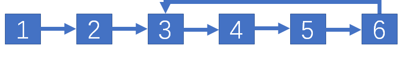

整数 #1 整数除法 输入两个int型整数，它们进行除法计算并返回商，**要求不得使用乘号*，除号/以及求余符号%**，当发出溢出时，返回最大的整数值。假设除数不为0。例如，输入15和2，输出15/2，即7。（注意：int型范围是-2^31 ~ -2^31-1）
分析：
只基于减法实现是可以的，但是此情况的最坏时间复杂度为O(n)，需要对效率进一步提升。
当被除数大于出除数时，继续比较判断被除数是否大于除数的2倍，如果是，则继续判断被除数是否大于除数的4倍、8倍等。如果被除数最多大于除数的2^k倍，那么将被除数减去除数的2^k倍，然后将剩余的被除数重复前面的步骤。由于每次将除数翻倍，因此优化后的时间复杂度是O(logn)。
细节：
最小的整数是-2^31, 最大的整数是2^31-1。因此，如果将负整数直接转换为正整数可能导致溢出。可以先将正整数都转换成负整数，再根据需要调整商的符号。
直接溢出的情况，被除数为-2^31，除数为-1
防止被除数在扩大一倍时溢出，所以需要提前判断
public static int divide (int dividend, int divisor) if (dividend == Integer.MIN_VALUE && divisor == -1 ) { return Integer.MIN_VALUE; } int negative = 2 ; if (dividend > 0 ) { negative--; dividend = -dividend; } if (divisor > 0 ) { negative--; divisor = -divisor; } int result = divideCore(dividend, divisor); return negative == 1 ? -result : result; } private static int divideCore (int dividend, int divisor) int result = 0 ; while (dividend <= divisor) { int value = divisor; int quotient = 1 ; while (value >= Integer.MIN_VALUE / 2 && dividend <= value + value) { quotient += quotient; value += value; } result += quotient; dividend -= value; } return result; }
#2 二进制加法 给定两个表示二进制的字符串，请计算它们的和，并以二进制字符串的形式输出。例如，输入的二进制字符串分别是”11”和”10”，则输出”101”
注意：不能直接将二进制字符串转换成整数运算，因为并没有限定二进制字符串的长度，可能会造成溢出。
public static String addBinary (String a, String b) if (a == null || b == null ) { return "" ; } StringBuilder result = new StringBuilder(); int a_length = a.length() - 1 ; int b_length = b.length() - 1 ; int carry = 0 ; while (a_length >= 0 || b_length >= 0 ) { int digitA = a_length >= 0 ? a.charAt(a_length--) - '0' : 0 ; int digitB = b_length >= 0 ? b.charAt(b_length--) - '0' : 0 ; int sum = digitA + digitB + carry; if (sum >= 2 ) { carry = 1 ; sum -= 2 ; } else { carry = 0 ; } result.append(sum); } if (carry == 1 ) { result.append(1 ); } return result.reverse().toString(); }
#3 前n个数字二进制形式中1的个数 输入一个非负数n，请计算0到n之间每个数字的二进制形式中1的个数，并输出一个数组。例如，输入的n为4，由于0、1、2、3、4的二进制形式中1的个数分别为0、1、1、2、1，因此输出数组[0,1,1,2,1]。
简单分析：最直观的解法，就是用for循环来计算从0到n的每个整数i的二进制形式中1的个数。于是问题转换成如何求一个整数i的二进制形式中1的个数。
思路
根据i&(i-1)计算
此公式的核心思想是把i最右面的1变成0。可以通过for循环，不断地把最右边的1变成0，变化了几次就说明有几个1。其中页暗藏动态规划的思想，数字i中1的个数比i&(i-1)中1的个数多1。
基于思路1 实现: public static int [] countBits_1(int n) { int [] result = new int [n + 1 ]; for (int i = 1 ; i <= n; i++) { result[i] = result[i & (i - 1 )] + 1 ; } return result; }
根据i/2计算
通过观察发现，如果正整数i是偶数，那么i相当于’i/2’左移一位的结果，因此它们的二进制形式中1的个数是相同的。如果i是奇数，那么i相当于’i/2’左移一位之后，再将最右边一位设成1的结果，因此奇数i的二进制形式中1的个数比’i/2’中的1的个数多1。
基于思路2 实现: public static int [] countBits_2(int n) { int [] result = new int [n + 1 ]; for (int i = 1 ; i <= n; i++) { result[i] = result[i >> 1 ] + (i & 1 ); } return result; }
上述代码用’i >> 1’计算’i/2’，用’i & 1’计算’i%2’，因为位运算比除法运算和求余运算更高效。
#4 只出现一次的数字 输入一个整数数组，书注重只有一个数字出现了一次，而其他数字都出现了3次。请找出那个只出现一次的数字。例如，如果输入的数组为[0,1,0,1,0,1,100]，则只出现一次的数字是100。
思路：一个整数是由32个0或1组成的。我们可以将数组中所有数字的同一位置的数位相加。因此，如果数组中所有数字的第i个数位相加之和能被3整除，那么只出现一次的数字的第i个位数一定是0；如果数组中所有数字的第i个数位相加之和被3除余1，那么只出现一次的数字的第i个数位一定是1。
public static int singleNumber (int [] nums) int [] bitSums = new int [32 ]; int result = 0 ; for (int num : nums) { for (int i = 0 ; i < 32 ; i++) { bitSums[i] += (num >> (31 - i)) & 1 ; } } for (int i = 0 ; i < 32 ; i++) { result = (result << 1 ) + bitSums[i] % 3 ; } return result; }
举一反三： 如果数组中只有一个数字出现m次，其他数字都出现n次，m不能被n整除，找出唯一出现m次的数字。
用同样的思路解决此问题，最后验证累加后的整数对应bit位能否被m整除。
#5 单词长度的最大乘积 给定一个字符串数组 words，请计算当两个字符串 words[i] 和 words[j] 不包含相同字符时，它们长度的乘积的最大值。假设字符串中只包含英语的小写字母。如果没有不包含相同字符的一对字符串，返回 0。
例如：输入的字符串数组words为[“abcw”,”foo”,”bar”,”fxyz”,”abcdef”], 最后返回的应该是16。
思路1：
假设两字符串长度分别为p,q。
最直观的解法就是蛮力法。如果蛮力法比较两个字符串是否有相等字符，比较的时间复杂度为O(pq)。
通过哈希表来优化时间效率。对于每个字符串，用一个哈希表记录该字符串中的所有字符。因为题目假设的所有字符都是英文小写字母，只有26个可能的字符，因此最多只需要在每个字符串对应的哈希表中查询26次就能判断两个字符串是否包含相同的字符，因此比较的时间复杂度为O(1)。
public static int maxProduct_1 (String[] words) boolean [][] flags = new boolean [words.length][26 ]; for (int i = 0 ; i < words.length; i++) { for (char c : words[i].toCharArray()) { flags[i][c - 'a' ] = true ; } } int result = 0 ; for (int i = 0 ; i < words.length - 1 ; i++) { for (int j = i + 1 ; j < words.length; j++) { int k = 0 ; for (; k < 26 ; k++) { if (flags[i][k] == true && flags[j][k] == true ) { break ; } } if (k == 26 ) { int prod = words[i].length() * words[j].length(); result = Math.max(result, prod); } } } return result; }
进一步分析此方法的时间和空间复杂度。
第一步，初始化每个字符串对应的哈希表。如果words的长度为n，凭均每个字符串的长度为k，那么初始化哈希表的时间复杂度为O(nk)。
第二步，根据哈希表判断每对字符串是否包含相同的字符。总共有O(n^2)对字符串，每次判断需要的时间为O(1)，因此这一步的时间复杂度为O(n^2)。
于是这种解法的整体时间复杂度为O(nk + n^2)。
为每一个字符串创建一个数组，所以空间复杂度为O(n)
思路2：用整数的二进制数位记录字符串中出现的字符
前面的解法是用一个长度为26的布尔型数组记录字符串中出现的字符。布尔值只有两种可能，true or false。这与二进制有些类似。因此，可以将长度为26的布尔型数组用26个二进制的数位代替，二进制的0对应布尔值的false，1对应true。
26bit就足以表示一个字符串中可能出现的字符，所以我们可以用int(32bit)来表示。用二进制数位表示的好处是可以更快地判断两个字符串是否包含相同的字符。
public static int maxProduct_2 (String[] words) int [] flags = new int [words.length]; int result = 0 ; for (int i = 0 ; i < words.length; i++) { for (char ch : words[i].toCharArray()) { flags[i] |= 1 << (ch - 'a' ); } } for (int i = 0 ; i < words.length - 1 ; i++) { for (int j = i + 1 ; j < words.length; j++) { if ((flags[i] & flags[j]) == 0 ) { int prod = words[i].length() * words[j].length(); result = Math.max(result, prod); } } } return result; }
复杂度分析：
与思路1时间空间复杂度均相同。
但是在比较是否存在相等字符时，只需要一次运算即可。而思路1中可能需要26次布尔运算，所以新的解法时间效率更高 。
数组 #双指针 方向相反的双指针经常用来求排序数组中的两个数字之和。
方向相同的双指针通常用来求正数数组中子数组的和或乘积。
#6 排序数组中的两个数字之和 考点 双指针
输入一个递增序列的数组和一个值k，请问如何在数组中找出两个和为k的数字并返回它们的下标？假设数组中存在且只存在一对符合条件的数字，同时一个数字不能使用两次。
例如：输入数组[1,2,4,6,10], k的值为8，应该返回[1,3]
分析：
最直观的暴力解法，固定数组中的一个数字，然后判断数组中其余数字与他的和是不是等于k。可以看成是用两个for循环遍历数组，时间复杂度为O(n^2)
上述解法可以用二分查找优化。还是先固定一个数字i，然后用二分查找寻找k-i。时间复杂度为O(nlogn)。
上述解法还可以用空间换时间进行优化。可以先将数组中所有的数字都放入一个哈希表，然后逐一扫描数组中的每个数字。扫描i, 就在哈希表里找k-i。判断哈希表中是否存在一个数字的时间复杂度为O(1)，因此新解法的**时间复杂度为O(n)。同时它需要一个大小为O(n)的哈希表，因此 空间复杂度也是O(n)**。
存在时间复杂度是O(n)，空间复杂度是O(1)的解法，就是我们最后要引出的双指针。
两个指针一个从前向后移动，一个从后向前移动。如果小于target前指针后移，如果大于target后指针前移。如果相等则返回指针对应的索引。
public static int [] twoSum(int [] numbers, int target) { int i = 0 ; int j = numbers.length - 1 ; while (i < j && numbers[i] + numbers[j] != target) { if (numbers[i] + numbers[j] < target) { i++; } else { j--; } } return new int [] {i, j}; }
#7 数组中和为0的3个数字 输入一个数组，如何找出数组中所有和为0的3个数字的三元组？需要注意的是，返回值中不得包含重复的三元组。
例如：在数组[-1,0,1,2,-1,-4]中有两个三元组的和为0，它们分别是[-1,0,1]和[-1,-1,2]。
分析：
这是上一题的加强版。如果输入的数组是排序的，我们就可以先固定一个数字i，然后再排序数组中查找和为-i的两个数字。我们已经有了用O(n)时间在排序数组中找出和为给定值的两个数字的方法，由于需要固定数组中的每个数字，因此查找此三元组的时间复杂度是O(n^2)。
但是这个题目并没有说给出的数组是排序的，因此需要先对数组排序。排序算法的时间复杂度通常是O(nlogn)，因此这种解法的总时间复杂度是O(logn + n^2), 最后还是O(n^2)
最后要注意去除重复的三元组。在指针移动时跳过所有相同的值即可。需要跳过相同值的地方共有两处，第一处是固定i的时候，第二处是双指针移动的时候。移动前指针和后指针都可以，移动的那个指针要考虑跳过重复值。
public static List<List<Integer>> threeSum(int [] nums) { List<List<Integer>> result = new LinkedList<List<Integer>>(); if (nums.length >= 3 ) { Arrays.sort(nums); int i = 0 ; while (i < nums.length - 2 ) { twoSum(nums, i, result); int temp = nums[i]; while (nums[i] == temp && i < nums.length - 2 ) { i++; } } } return result; } public static List<List<Integer>> twoSum(int [] nums, int i, List<List<Integer>> result) { int j = i + 1 ; int k = nums.length - 1 ; while (j < k) { if (nums[i] + nums[j] + nums[k] == 0 ) { result.add(Arrays.asList(nums[i], nums[j], nums[k])); int temp = nums[j]; while (nums[j] == temp && j < k) { j++; } } else if (nums[i] + nums[j] + nums[k] < 0 ) { j++; } else { k--; } } return result; }
#8 和大于或等于k的最短子数组 输入一个正整数组成的数组和一个正整数k，请问数组中和大于或等于k的连续子数组的最短长度是多少？如果不存在所有数字之和大于或等于k的子数组，则返回0。
例如：输入数组[5,1,4,3]，k的值为7，最后输出2。
考点 双指针
分析：
用两个指针P1，P2来锁定子数组，子数组由两个指针之间所有数字组成。
初始化时两指针都指向数组的第一个元素。
如果子数组和大于等于k，则P1右移，相当于从子数组的最左边删除一个数字，子数组长度减1。如果子数组和小于k，则P1右移，相当于在子数组的最右边添加一个新的数字，子数组长度加1。
public static int minSubArrayLen (int k, int [] nums) int result = Integer.MAX_VALUE; int sum = 0 ; int left = 0 , right = 0 ; for (; right < nums.length; right++) { sum += nums[right]; while (sum >= k && left <= right) { result = Math.min(result, right - left + 1 ); sum -= nums[left++]; } } return result == Integer.MAX_VALUE ? 0 : result; }
复杂度分析：
尽管代码中有两个嵌套的循环，但是**时间复杂度仍然是O(n)**。因为left和right都只加不减，变化范围都是[0~n-1]。
#9 乘积小于k的子数组 输入一个由正整数组成的数组和一个正整数k，请问数组中有多少个数字乘积小于k的连续子数组？
例如：输入数组[10,5,2,6]，k的值为100，有8个子数组的所有数字的乘积小于100。
考点 双指针
分析：
与上一题思路类似，用双指针P1，P2锁定子数组，如果子数组中所有数字的乘积小于k，那么右移P2；反之则右移P1。当指针P1到某个位置时子数组的乘积小于k，就不需要再向右移动指针P1。因为只要保持指针P2不动，向右移动指针P1形成的所有子数组的数字乘积就一定小于k。此时两个指针之间有多少个数字，就找到了多少个数字乘积小于k的子数组。
public static int numSubarrayProductLessThanK (int [] nums, int k) int result = 0 ; int product = 1 ; int left = 0 , right = 0 ; for (; right < nums.length; right++) { product *= nums[right]; while (left <= right && product >= k) { product /= nums[left++]; } result += right >= left ? right - left + 1 : 0 ; } return result; }
复杂度分析：
和上一题同理，时间复杂度为O(n)
#累加数组数字求子数组之和 使用双指针解决子数组之和问题有一个前提条件：数组中的所有数字都是正数。如果数组中有正数、负数和零，那么双指针的思路并不适用。因为当数组中有负数时在子数组中添加数字不一定能增加子数组之和，从子数组中删除数字也不一定能减少子数组之和。
所以引出求子数组和的另一种思路：累加数组数字
首先需要预处理。假设数组长度为n，从头到尾扫描一次，就能求出从下标0开始到下标0结束的所有子数组之和S_0，从下标0开始到下标1结束的子数组之和S_1，以此类推，直到求出从下标0开始到最后一个数字的子数组之和S_n-1。因此，从下标为i开始到下标为j结束的子数组的和就是S_j - S_i-1 。
#10 和为k的子数组 输入一个整数数组和一个整数k，请问数组中有多少个数字之和等于k的连续子数组？
例如：输入数组[1,1,1]，k的值为2，有2个连续子数组之和等于2。
分析：
最先想到暴力解法。在一个长度为n的数组中有O(n^2)个子数组，如果求出每个子数组的和需要O(n)的时间，那么总共需要O(n^3)的时间就能求出所有子数组的和。
对暴力解法进一步优化。在计算长度为i的子数组数字之和时，应该把子数组堪称长度为i-1的子数组的基础上添加一个新的数字。因此，如果已经求出了长度为i-1的子数组的数字之和，那么只要再加上新添加的数字就能得出长度为i的子数组的数字之和。因为只需要1次加法，需要O(1)时间，优化后的时间复杂度为O(n^2)。
再换一种思路，我们从头到尾扫描数组中的数字时求出前i个数字之和，并将结果保存下来。当扫描到数组的第i个数字时并求得前i个数字之和是x时，需要知道在i之前存在多少个j，满足前j个数字之和等于x-k。所以，对于每个i，不但要保存前i个数字之和，还要保存每个和出现的次数。 分析到这儿就知道我们需要一个哈希表，键是前i个数字之和，值是每个和出现的次数。
public static int subarraySum (int [] nums, int k) Map<Integer, Integer> sumToCount = new HashMap<>(); int result = 0 ; int sum = 0 ; sumToCount.put(0 , 1 ); for (int i = 0 ; i < nums.length; i++) { sum += nums[i]; result += sumToCount.getOrDefault(sum - k, 0 ); sumToCount.put(sum, sumToCount.getOrDefault(sum, 0 ) + 1 ); } return result; }
复杂度分析：
只需要从头至尾扫描数组一次，所以**时间复杂度为O(n)。需要一个哈希表保存前i个数字的和及出现的次数，所以 空间复杂度为O(n)**。
#11 0和1个数相同的子数组 输入一个只包含0和1的数组，请问如何求0和1个数相同的最长连续子数组的长度？
例如：在数组[0,1,0]中有两个子数组包含相同个数的0和1，分别是[0,1]和[1,0]，他们的长度都是2，因此输出2。
分析：
如果题目中所有的0都变成-1，那么01个数相同的子数组和必为1。这样此题就转换成了一个求和为k的子数组的问题。 想要完成这样的转换也很简单，只需要在每次累加时，判断当前数字时否为0，如果为0则累加-1。
public static int findMaxLength (int [] nums) Map<Integer, Integer> sumToIndex = new HashMap<>(); int result = 0 ; int sum = 0 ; sumToIndex.put(0 , -1 ); for (int i = 0 ; i < nums.length; i++) { sum += nums[i] == 0 ? -1 : 1 ; if (sumToIndex.containsKey(sum)) { result = Math.max(result, i - sumToIndex.get(sum)); } else { sumToIndex.put(sum, i); } } return result; }
复杂度分析：
与求和为k的子数组同理，时间复杂度空间复杂度都为O(n)
#12 左右两边子数组的和相等 输入一个整数数组，如果一个数字左边的子数组的数字之和等于右边的子数组的数字之和，那么返回该数字的下标。如果存在多个这样的数字，则返回最左边一个数字的下标。如果不存在这样的数字，则返回-1。
例如：在数组[1,7,3,6,2,9]中，下标为3的数字左右两边子数组之和相等，因此应该输出3。
分析：
当扫描到第i个数字时，可以算出前i个数字的累加和。此时，i左边子数组的和等于前i个数字的和减i，i右边子数组的和等于整个数组的和total减前i个数字的累加和。所以此题还得求整个数组的累加和total。
public static int pivotIntex (int [] nums) int total = 0 ; int sum = 0 ; int i = 0 ; for (; i < nums.length; i++) { total += nums[i]; } for (i = 0 ; i < nums.length; i++) { sum += nums[i]; if (sum - nums[i] == total - sum) { return i; } } return -1 ; }
复杂度分析：
共有两个时间复杂度为O(n)的循环，因此**时间复杂度为O(n)。并没有使用数组、哈希表等辅助数据容器，因此 空间复杂度为O(1)**。
#13 二维子矩阵的数字之和 输入一个二维矩阵，如何计算给定左上角坐标和右下角坐标的子矩阵的数字之和？对于同一个二维矩阵，计算子矩阵的数字之和的函数可能由于输入不同的坐标而被反复调用多次。
例如：输入如下矩阵和坐标(2,1),(4,3)，应该返回8
[[3,0,1,4,2],
[5,6,3,2,1],
[1,2,0,1,5],
[4,1,0,1,7],
[1,0,3,0,5]]
分析：
如果不考虑时间复杂度，采用蛮力法用两个嵌套的循环总是可以求出一个二维矩阵的数字之和。如果矩阵的行数和列数分别是m和n，那么这种蛮力法的时间复杂度是O(mn)。但是由于题目提到，计算函数可能被反复调用多次，因此应该优化求和的过程，尽快地实现子矩阵求和函数。
我们用[(r1,c1)(r2,c2)]来表示左上角坐标为(r1,c1)，右下角坐标为(r2,c2)的子矩阵的数字之和。通过观察发现，此矩阵的数字之和可以用4个左上角坐标为(0,0)的子矩阵的数字之和求得。[(r1,c1)(r2,c2)] = [(0,0)(r2,c2)] - [(0,0)(r2,c1-1)] - [(0,0)(r1-1,c2)] + [(0,0)(r1-1,c1-1)]。
再进一步思考，只要在预处理阶段求出(0,0)到每个右下角坐标的子矩阵的数字之和，然后存到一个辅助矩阵中，目标子矩阵的数字之和就可以在常数时间内计算完毕。
那要怎么计算子矩阵呢？可以把[(0,0),(i,j)]看成两部分。第一部分是[(0,0),(i-1,j)],第二部分是矩阵中第i行中列号从0到j的所有数字。为了计算方便，可以在初始化时创建一个比原数组行列多1的辅助矩阵。这样在计算辅助矩阵的第一行时也可以在循环中进行。
public static int [][] NumMatrix(int [][] matrix) { if (matrix.length == 0 || matrix[0 ].length == 0 ) { return null ; } int [][] sums = new int [matrix.length+1 ][matrix[0 ].length+1 ]; for (int i = 1 ; i < matrix.length; i++) { int rowSum = 0 ; for (int j = 0 ; j < matrix[0 ].length; j++) { rowSum += matrix[i][j]; sums[i+1 ][j+1 ] = sums[i][j+1 ] + rowSum; } } return sums; } public static int sumRegion (int sums[][], int row1, int col1, int row2, int col2) return sums[row2 + 1 ][col2 + 1 ] - sums[row1][col2 + 1 ] - sums[row2 + 1 ][col1] + sums[row1][col1]; }
复杂度分析：
用两个嵌套的for循环计算辅助矩阵，时间复杂度为O(mn)。同时，辅助矩阵需要的空间也为O(mn)。
字符串 java中String类型所表达的字符串时无法改变的。如果对字符串进行写操作，那么修改的内容在返回值的字符串中，原来的字符串保持不变。
由于每次对String实例进行修改将创建一个新的String实例，因此如果连续多次对String实例进行修改将连续创建多个新的String实例，不必要的内存开销较大。所以可以借助StringBuilder或StringBuffer(线程安全效率低)来容纳修改后的结果。
#双指针 如果将字符串看成一个由字符串组成的数组，那么也可以用两个指针来定位一个子字符串。
可以在移动这两个指针的同时，统计两个指针之间的字符串中字符出现的次数，这样可以解决很多常见的面试题，如定位变位词等。
由于这种类型的面试题都与统计字母出现的次数有关，我们经常使用哈希表来存储每个元素出现的次数，因此解决这种类型的面试题通常需要同时使用双指针和哈希表 。
#14 字符串中的变位词 输入字符串s1和s2，如何判断字符串s2中是否包含字符串s1的某个变位词？如果字符串s2中包含字符串s1的某个变位词，则字符串s1至少有一个变位词是字符串s2的子字符串。假设两个字符串中只包含英文小写字母。
例如：
字符串s1为”ac”, s2为”dgcaf”, 输出true
字符串s1为”ab”, s2为”dgcaf”, 输出false
分析：
还是最先想到暴力法。可以先求出字符串s1的所有排列，然后判断每个排列是不是字符串s2的子字符串。如果一个字符串有n个字符，那么它一共有n!个排列，因此这种解法的时间复杂度不会低于O(n!)。
下面尝试更高效的解法。我们可以以用一个哈希表来存储每个字符出现的次数。首先扫描s1，每扫描到一个字符，就找到它在哈希表中的位置并把对应的值加1。然后考虑s2中是否有s1的变位词。假设字符串s2中有一个子字符串是s1的变位词，逐个扫描这个变位词中的字母，并把字母在哈希表中对应的值减1。如果同位词存在，最后操作完，哈希表中所有的值应该都是0。
public static boolean checkInclusion (String s1, String s2) if (s2.length() < s1.length()) { return false ; } int [] counts = new int [26 ]; for (int i = 0 ; i < s1.length(); i++) { counts[s1.charAt(i) - 'a' ]++; counts[s2.charAt(i) - 'a' ]--; } if (areAllZero(counts)) { return true ; } for (int i = s1.length(); i < s2.length(); i++) { counts[s2.charAt(i) - 'a' ]--; counts[s2.charAt(i - s1.length()) - 'a' ]++; if (areAllZero(counts)) { return true ; } } return false ; } private static boolean areAllZero (int [] counts) for (int count : counts) { if (count != 0 ) { return false ; } } return true ; }
复杂度分析：需要扫描字符串s1和s2各一次，如果他们的长度分别是m和n，那么**时间复杂度是O(m+n)。这种解法用到了一个长度为26的数组，是一个常数，所以 空间复杂度是O(1)**。
#15 字符串中所有的变位词 输入字符串s1和s2，如何找出字符串s2的所有变位词在字符串s1中的起始下标？假设两个字符串中只包含英文小写字母。
例如：字符串s1为”cbadabacg”, 字符串s2为”abc”，应该输出0和5。
分析：就是上一题的变种。在成功找到变位词时返回对应子字符串第一个字符的索引即可。
public static List<Integer> findAnagrams (String s1, String s2) List<Integer> indices = new LinkedList<>(); if (s1.length() < s2.length()) { return indices; } int [] counts = new int [26 ]; int i = 0 ; for (; i < s2.length(); i++) { counts[s2.charAt(i) - 'a' ]++; counts[s1.charAt(i) - 'a' ]--; } if (areAllZero(counts)) { indices.add(0 ); } for (i = s2.length(); i < s1.length(); i++) { counts[s1.charAt(i) - 'a' ]--; counts[s1.charAt(i - s2.length()) - 'a' ]++; if (areAllZero(counts)) { indices.add(i - s2.length() + 1 ); } } return indices; } private static boolean areAllZero (int [] counts) for (int count : counts) { if (count != 0 ) { return false ; } } return true ; }
复杂度分析：与上一题同理，时间复杂度为O(n) , **空间复杂度为O(1)**。
#16 不含重复字符的最长子字符串 输入一个字符串，求该字符串中不含重复字符的最长子字符串的长度。
例如：输入字符串”babcca”，其最长的不含重复字符的子字符串是”abc”，长度为3。
分析：
用左右两个指针锁定子字符串，用哈希表存放字符出现的次数。如果两指针之间的子字符串不包含重复字符，则向前移动右指针，否则向前移动左指针。两指针初始化时都在起始位置。
public static int lengthOfLongestSubstring1 (String s) if (s.length() == 0 ) { return 0 ; } int [] counts = new int [256 ]; int i = 0 ; int j = -1 ; int longest = 1 ; for (; i < s.length(); i++) { counts[s.charAt(i)]++; while (hasGreaterThan1(counts)) { j++; counts[s.charAt(j)]--; } longest = Math.max(longest, i - j); } return longest; } private static boolean hasGreaterThan1 (int [] counts) for (int count : counts) { if (count > 1 ) { return true ; } } return false ; }
进一步分析：
每次移动指针的时候都要扫描一次哈希表，虽然哈希表的长度固定，但是这个常数还是有点大。所以最好能有一个不需要多次遍历整个哈希表的解法。
其实我们真正关心的是哈希表中有没有比1大的数字，因为如果有大于的数字就说明子数组中包含重复的数字。可以定义一个变量countDup来存储哈希表中大于1的数字的个数**(其实这个值最大就是1，用boolean变量存也可以)**。当移动右指针导致哈希表中某个数字从1变成2时，变量countDup加1。当移动左指针导致哈希表中某个数字从2变成1时，变量countDup减1。
public static int lengthOfLongestSubstring2 (String s) if (s.length() == 0 ) { return 0 ; } int [] counts = new int [256 ]; int i = 0 ; int j = -1 ; int longest = 1 ; int countDup = 0 ; for (; i < s.length(); i++) { counts[s.charAt(i)]++; if (counts[s.charAt(i)] == 2 ) { countDup++; } while (countDup > 0 ) { j++; counts[s.charAt(j)]--; if (counts[s.charAt(j)] == 1 ) { countDup--; } } longest = Math.max(longest, i - j); } return longest; }
#17 包含所有字符串的最短字符串 输入两个字符串s和t，请找出字符串s中包含字符串t的所有字符的最短子字符串。
例如：输入的字符串s为”ADDBANCAD”，字符串t为”ABC”，则字符串s中包含字符’A’, ‘B’, ‘C’的最短子字符串是”BANC”。如果不存在符合条件的子字符串，则返回空字符串””。如果存在多个符合条件的子字符串，则返回任意一个。
分析：
用两个指针定位子字符串。如果某一时刻两个指针之间之间的子字符串还没有包含字符串t的所有字符，则在子字符串中添加新的字，于是向右移动第二个指针。如果已经包含字符串t的所有字符，则向右移动第一个指针。
public static String minWindow (String s, String t) HashMap<Character, Integer> charToCount = new HashMap<>(); for (char ch : t.toCharArray()) { charToCount.put(ch, charToCount.getOrDefault(ch, 0 ) + 1 ); } int count = charToCount.size(); int start = 0 , end = 0 , minStart = 0 , minEnd = 0 ; int minLength = Integer.MAX_VALUE; while (end < s.length() || (count == 0 && end == s.length())) { if (count > 0 ) { char endCh = s.charAt(end); if (charToCount.containsKey(endCh)) { charToCount.put(endCh, charToCount.get(endCh) - 1 ); if (charToCount.get(endCh) == 0 ) { count--; } } end++; } else { if (end - start < minLength) { minLength = end - start; minStart = start; minEnd = end; } char startCh = s.charAt(start); if (charToCount.containsKey(startCh)) { charToCount.put(startCh, charToCount.get(startCh) + 1 ); if (charToCount.get(startCh) == 1 ) { count++; } } start++; } } return minLength < Integer.MAX_VALUE ? s.substring(minStart, minEnd) : "" ; }
复杂度分析：
只有一个while循环，把两个变量从0增加到字符串s的长度。所以**时间复杂度为O(n)。哈希表的键为字符，假设字符串中只有英文字母，所以哈希表的大小不会超过256。因此 空间复杂度为O(1)**。
#18 有效的回文 给定一个字符串，请判断它是不是回文。假设只需考虑字母和数字字符，并忽略大小写。
例如：”Was it a cat I saw”是一个回文字符串，而”race a car”不是回文字符串。
分析：
可以用双指针，一个从前向后移动，另一个从后向前移动。如果两指针指向的字符相同，则继续移动，直到两个指针相遇。注意：题目只考虑字母和数字字符，所以如果指针指向的字符既不是字母也不是数字，则跳过该字符。同时，由于忽略大小写，所以要把所有字母转换成相同的形式再做比较。
public static boolean isPalindrome (String s) int i = 0 ; int j = s.length() - 1 ; while (i < j) { char ch1 = s.charAt(i); char ch2 = s.charAt(j); if (!Character.isLetterOrDigit(ch1)) { i++; } else if (!Character.isLetterOrDigit(ch2)) { j--; } else { ch1 = Character.toLowerCase(ch1); ch2 = Character.toLowerCase(ch2); if (ch1 != ch2) { return false ; } i++; j--; } } return true ; }
在改变字母大小写时，建议操作字符而不是字符串。因为java中字符串不可变，修改字符串会创建新的字符串，造成内存浪费。
复杂度分析：
两个指针遍历字符串，**时间复杂度为O(n)**。
#19 最多删除一个字符得到回文 给定一个字符串，请判断如果最多从字符串中删除一个字符能不能得到一个回文字符串。
例如：如果输入字符串”abca”，由于删除字符串’b’或’c’就能得到一个回文字符串，因此输出为true。
分析：
与上一题类似，还是用双指针从两侧开始向里逐步比较。如果字符相同，则继续比较。如果字符不同，则按题目要求，删除一个字符后比较剩下的字符。因为不知道删除两个不同字符中的哪一个，因此都可以进行尝试。
public static boolean validPalindrome (String s) int start = 0 ; int end = s.length() - 1 ; for (; start < s.length() / 2 ; start++, end--) { if (s.charAt(start) != s.charAt(end)) { break ; } } return start == s.length() / 2 || isPalindrome(s, start, end - 1 ) || isPalindrome(s, start + 1 , end); } private static boolean isPalindrome (String s, int start, int end) while (start < end) { if (s.charAt(start) != s.charAt(end)) { break ; } start++; end--; } return start >= end; }
复杂度分析：最坏情况，从左右两端第一个字符开始就出现分歧，需要判断删除的情况。此时需要遍历字符串两遍，**时间复杂度O(n)**。
#20 回文子字符串的个数 给定一个字符串，请问该字符串中有多少个回文连续子字符串？
例如：字符串”aaa”有6个回文子字符串，分别为”a”, “a”, “a”, “aa”, “aa” 和 “aaa”。
分析：
同样用双指针来求解，但是思路略有不同。我们考虑从字符串的中心开始向两端延申。注意：回文的长度可以是奇数也可以是偶数。长度为奇数的回文对称中心只有一个字符，而长度为偶数的回文对称中心有两个字符。
public static int countSubstrings (String s) if (s == null || s.length() == 0 ) { return 0 ; } int count = 0 ; for (int i = 0 ; i < s.length(); i++) { count+= countPalindrome(s, i, i); count+= countPalindrome(s, i, i + 1 ); } return count; } private static int countPalindrome (String s, int start, int end) int count = 0 ; while (start >= 0 && end < s.length() && s.charAt(start) == s.charAt(end)) { count++; start--; end++; } return count; }
复杂度分析：
for循环嵌套while循环，**时间复杂度为O(n^2)**。
链表 #单向链表的简单定义 public class ListNode public int val; public ListNode next; public ListNode (int val) this .val = val; } }
#哨兵节点 哨兵节点是为了简化处理链表边界条件而引入的附加链表节点。哨兵节点通常位于链表的头部，它的值没有任何意义。在一个有哨兵节点的链表中，从第2个节点开始才真正保存有意义的信息。
用哨兵节点简化链表的插入操作
public ListNode append (ListNode head, int value) ListNode newNode = new ListNode(value); if (head == null ) { return newNode; } ListNode node = head; while (node.next != null ) { node = node.next; } node.next = newNode; return head; }
上述代码需要用if语句来单独处理输入头节点head为null的情形。可以用哨兵节点简化代码的逻辑。
public ListNode append (ListNode head, int value) ListNode dummy = new ListNode(0 ); dummy.next = head; ListNode newNode = new ListNode(value); ListNode node = dummy; while (node.next != null ) { node = node.next; } node.next = newNode; return dummy.next; }
用哨兵节点简化链表的删除操作
public ListNode delete (ListNode head, int value) if (head == null ) { return head; } if (head.val == value) { return head.next; } ListNode node = head; while (node.next != null ) { if (node.next.val == value) { node.next = node.next.next; break ; } node = node.next; } return head; }
上述代码用两条if语句来处理两个特殊情况
输入的链表为空
被删除的节点是原始链表的头节点
可以用哨兵节点简化代码逻辑
public ListNode delete (ListNode head, int value) ListNode dummy = new ListNode(0 ); dummy.next = head; ListNode node = dummy; while (node.next != null ) { if (node.next.val == value) { node.next = node.next.next; break ; } node = node.next; } return dummy.next; }
合理应用哨兵节点，就不再需要单独处理这些特殊的输入。
#双指针 按移动方式可以细分成两种不同的方法。
前后双指针，即一个指针在链表中提前朝着指向下一个节点的指针移动若干步，然后移动第二个指针。前后双指针的经典应用是查找链表的倒数第k个节点。
快慢双指针，即两个指针在链表中移动的速度不一样，通常是快的指针朝着指向下一个节点的指针一次移动两步，慢的指针一次只移动一步。采用这种方法，在一个没有环的链表中，当快的指针到达链表尾节点的时候慢的指针正好指向链表的中间节点。
#21 删除倒数第k个节点 如果给定一个链表，请问如何删除链表中的倒数第k个节点？假设链表中节点的总数为n，那么1<=k<=n。要求只能遍历链表一次。
例如：
输入链表1->2->3->4->5->6，删除倒数第2个节点之后的链表为
1->2->3->4->6
分析：
如果可以遍历链表两次，那么这个问题就会变得简单。在第1次遍历链表时，可以得出链表的节点总数n。在第2次遍历链表时，可以找出链表的第n-k个节点(即倒数第k+1个节点)，然后通过修改指针，即可删除倒数第k个节点。
但是题目要求只能遍历链表一次。我们可以定义两个指针，来遍历一次就找到倒数第k+1个节点。第一个指针P1从链表头节点开始先走k步，第二个指针P2保持不动；从第k+1步开始指针P2也从链表的头节点开始和指针P1以相同的速度遍历。由于两个指针的距离始终保持为k，当指针P1指向链表的尾节点时指针P2正好指向倒数第k+1个节点。
public static ListNode removeNthFromEnd (ListNode head, int n) ListNode dummy = new ListNode(0 ); dummy.next = head; ListNode front = head, back = dummy; for (int i = 0 ; i < n; i++) { front = front.next; } while (front != null ) { front = front.next; back = back.next; } back.next = back.next.next; return dummy.next; }
复杂度分析：遍历列表一边，**时间复杂度为O(n)**。
#22 链表中环的入口节点 如果一个链表中包含环，那么应该如何找出环的入口节点？从链表的头节点开始顺着next指针方向进入环的第1个节点为环的入口节点。
例如：下图所示的链表中，环的入口节点是3。

分析：
第一步是确定一个链表中是否包含环。如果链表中没有环，自然不存在环的入口节点，此时应该返回null。
可以用两个指针来判断链表中是否有环。指针P1，P2同时从头节点出发，P1一次走一步，P2一次走两步。如果链表中不包含环，P2指针直至抵达链表的尾节点都不会和走得慢的指针相遇。如果链表中包含环，走得快的指针在环里绕了一圈之后将会追上走得慢的指针。因此，可以根据一快一慢两个指针能否相遇来判断链表中是否包含环。
第二步是如何找到环的入口节点，还是可以用两个指针来解决。先定义两个指针P1，P2指向指向链表的头节点。如果链表中的环有n个节点，指针P1先在链表中向前移动n步，然后两个指针以相同的速度向前移动。当指针P2指向环的入口时，指针P1已经围绕环走了一圈又回到了入口节点。
最后一个问题是如何得到环中节点的数目。前面用一快一慢两个指针判断链表中是否存在环时，两个指针相遇的节点一定在环中。可以从这个相遇的节点出发一边继续向前移动一边计数，当再次回到这个节点时就可以得到环中节点的数目。
private static ListNode getNodeInLoop (ListNode head) if (head == null || head.next == null ) { return null ; } ListNode slow = head.next; ListNode fast = slow.next; while (slow != null && fast != null ) { if (slow == fast) { return slow; } slow = slow.next; fast = fast.next; if (fast != null ) { fast = fast.next; } } return null ; } public static ListNode detectCycle1 (ListNode head) ListNode inLoop = getNodeInLoop(head); if (inLoop == null ) { return null ; } int loopCount = 1 ; for (ListNode n = inLoop; n.next != inLoop; n = n.next) { loopCount++; } ListNode fast = head; for (int i = 0 ; i < loopCount; i++) { fast = fast.next; } ListNode slow = head; while (fast != slow) { fast = fast.next; slow = slow.next; } return slow; }
分析：
上述解法需要求出链表的环中节点的数目。但是如果仔细分析，就会发现没必要求出环中节点的数目。慢的指针一次走一步，假设在相遇时慢的指针走了k步。由于快的指针一次走两步，因此在相遇时快的指针一共走了2k步。因此相遇时慢的指针比快的指针多走了k步。另外，两指针相遇时快的指针比慢的指针在环中多转了若干全，也就是说，快指针多走的步数k一定是环中节点数目的整数倍。满指针走过的步数k也是环中节点数目的整数倍。
基于此思想，可以让一个指针指向相遇的节点，该指针的位置是之前慢的指针走了k步到达的位置。接着让另一个指针指向链表的头节点，然后两个指针以相同的速率一起移动，此时两指针相遇，前指针比后指针多走k步，相遇的节点刚好是环的入口节点 。
public static ListNode detectCycle2 (ListNode head) ListNode inLoop = getNodeInLoop(head); if (inLoop == null ) { return null ; } ListNode node = head; while (node != inLoop) { node = node.next; inLoop = inLoop.next; } return node; }
#23 两个链表的第1个重合节点 输入两个单向链表，如何找出它们的第1个重合节点。
例如：
此时两个链表的第1个重合节点的值是4。
分析：
很直观地想到暴力法求解。在第1个链表中按顺序遍历每个节点，每遍历到一个节点时，在第2个链表中顺序遍历每个节点，然后进行比较。如果第1个链表的长度为m，第2个链表的长度为n，那么该方法的时间复杂度是O(mn)。蛮力法一般不是最好的解法， 所以进一步分析此种链表的特点以求突破。
特点1：可以在重合的两个链表的基础上构造一个包含环的链表。
此时，环的入口节点即是两个链表的第1个重合节点。可以利用上一题的方法解决。
特点2：如果两个单向链表有重合节点，那么从某个节点开始这两个链表的next指针都指向同一个节点。
那么如果我们可以从链表的尾部开始比较，最后一个相同的节点就是我们要找的节点。想要实现从尾部开始比较，可以利用栈这种先进后出的结构。将两个链表分别入栈，然后比较栈顶结点。如果两链表的长度分别为m，n，此种方法的**时间复杂度为O(m+n)。 空间复杂度也为O(m+n)**。
上述方法之所以要用栈，是因为我们希望能同时到达两个链表的尾节点。当两个链表的长度不同时，如果从头开始遍历，到达尾节点的时间就不一致。其实解决这个问题有更简单的方法：首先遍历两个链表得到它们的长度，这样就能知道哪个链表比较长，以及长链表比短链表多几个节点。假设长链表比短链表多k个节点。第2次遍历时，指针P1，P2分别指向长短链表的头部。指针P1先在长链表中移动k步，然后两指针同时移动，此时两指针相遇的节点即是第一个公共节点。此种方法的**时间复杂度也是O(m+n)， 由于不需要用栈，空间复杂度为O(1)**。
public static ListNode getIntersectionNode (ListNode headA, ListNode headB) int count1 = countList(headA); int count2 = countList(headB); int delta = Math.abs(count1 - count2); ListNode longer = count1 > count2 ? headA : headB; ListNode shorter = count1 > count2 ? headB : headA; for (int i = 0 ; i < delta; i++) { longer = longer.next; } while (longer != shorter) { shorter = shorter.next; longer = longer.next; } return longer; } private static int countList (ListNode head) int count = 0 ; while (head != null ) { count++; head = head.next; } return count; }
#24 反转链表 定义一个函数，输入一个链表的头节点，反转该链表并输出反转后链表的头节点。
例如：
分析：
在调整节点指针时，除了需要知道节点本身，还要知道它的前一个节点和后一个节点。所以在遍历链表逐个反转每个节点的next指针时需要用到3个指针。
public static ListNode reverseList (ListNode head) ListNode prev = null ; ListNode cur = head; while (cur != null ) { ListNode next = cur.next; cur.next = prev; prev = cur; cur = next; } return prev; }
复杂度分析：遍历链表一边，**时间复杂度O(n)， 空间复杂度O(1)**。
#25 链表中的数字相加 给定两个表示非负整数的单向链表，请问如何实现这两个整数的相加并把它们的和仍然用单向链表表示？链表中的每个节点表示整数十进制的一位，并且头节点对应整数的最高位而尾节点对应整数的个位。
例如：
分析：
第一反应是，根据链表求出整数，然后将整数相加，最后把结果用链表表示。这种思路最大的问题是没考虑到整数有可能会溢出 ，当链表较长时，可能会超出int甚至long的范围。
通常两整数相加，都是先算低位再算高位，因为还要考虑进位的问题。所以想到可以把链表反转，然后在逐个节点上实现加法。最后把表示和的链表反转。
public static ListNode addTwoNumbers (ListNode head1, ListNode head2) head1 = reverseList(head1); head2 = reverseList(head2); ListNode reversedHead = addReversed(head1, head2); return reverseList(reversedHead); } private static ListNode addReversed (ListNode head1, ListNode head2) ListNode dummy = new ListNode(0 ); ListNode sumNode = dummy; int carry = 0 ; while (head1 != null || head2 != null ) { int sum = (head1 == null ? 0 : head1.val) + (head2 == null ? 0 : head2.val) + carry; carry = sum >= 10 ? 1 : 0 ; sum = sum >= 10 ? sum - 10 : sum; ListNode newNode = new ListNode(sum); sumNode.next = newNode; sumNode = sumNode.next; head1 = head1 == null ? null : head1.next; head2 = head2 == null ? null : head2.next; } if (carry > 0 ) { sumNode.next = new ListNode(carry); } return dummy.next; }
#26 重排链表 给定一个链表，链表中节点的顺序是L0->L1->L2->…->Ln-1->Ln，请问如何重排链表使节点的顺序变成L0->Ln->L1->Ln-1->L2->Ln-2…
例如：
分析：
观察输入链表和输出链表之间的关系，发现重排链表实际上是把链表分成前后两半。在示例链表中，前半段包含1、2、3三个节点，后半段包含4、5、6三个节点。然后把后半段链表反转，再与前半段链表拼接。
首先需要解决的问题是如何把一个链表分成两半，即找到链表的中间节点。可以一快一慢两个指针实现。两个指针同时从链表的头节点出发，快的指针一次走两步，慢的指针一次走一步，当快的指针走到链表的尾节点时，慢的指针刚好走到链表的中间节点。要注意：链表的节点总数可能是奇数也可能是偶数。当链表的节点总数是奇数时，要确保链表的前半段比后半段多一个节点。
public static void reorderList (ListNode head) ListNode dummy = new ListNode(0 ); dummy.next = head; ListNode fast = dummy; ListNode slow = dummy; while (fast != null && fast.next != null ) { slow = slow.next; fast = fast.next; if (fast.next != null ) { fast = fast.next; } } ListNode temp = slow.next; slow.next = null ; link(head, reverseList(temp), dummy); } private static void link (ListNode node1, ListNode node2, ListNode head) ListNode prev = head; while (node1 != null && node2 != null ) { ListNode temp = node1.next; prev.next = node1; node1.next = node2; prev = node2; node1 = temp; node2 = node2.next; } if (node1 != null ) { prev.next = node1; } }
上述代码中，当变量fast指向尾节点时，变量slow指向前半段的最后一个节点。
#27 回文链表 如何判断一个链表是不是回文？要求解法的时间复杂度是O(n)，并且不得使用超过O(1)的辅助空间。
例如：
分析：
如果不考虑辅助空间的限制，直观的解法是创建一个新的链表，链表中的节点顺序和输入链表的节点顺序正好相反。二者比较即可判断是否是回文链表，此时需要O(n)的辅助空间。
分析回文链表的特点以找出更好的解法。回文链表的一个特性是对称性，也就是说，如果把链表分为前后两半，那么前半段链表反转之后与后半段链表是相同的。因此可以想到把链表分成前后两半，然后把其中一半反转。
public static boolean isPalindrome (ListNode head) if (head == null || head.next == null ) { return true ; } ListNode slow = head; ListNode fast = head.next; while (fast.next != null && fast.next.next != null ) { fast = fast.next.next; slow = slow.next; } ListNode secondHalf = slow.next; if (fast.next != null ) { secondHalf = slow.next.next; } slow.next = null ; return equals(secondHalf, reverseList(head)); } private static boolean equals (ListNode head1, ListNode head2) while (head1 != null && head2 != null ) { if (head1.val != head2.val) { return false ; } head1 = head1.next; head2 = head2.next; } return head1 == null && head2 == null ; } private static ListNode reverseList (ListNode head) ListNode prev = null ; ListNode cur = head; while (cur != null ) { ListNode next = cur.next; cur.next = prev; prev = cur; cur = next; } return prev; }
上述代码中，不管链表的节点总数是奇数还是偶数，变量slow都指向链表前半段的最后一个节点。
双向链表和循环链表 由于单向链表只能从头节点开始遍历到尾节点，遍历的顺序受到限制，在很多场景下使用起来不太方便，因此双向链表应运而生。双向链表在单向链表节点的基础上增加了指向前一个节点的指针，这样一来，既可从前往后遍历，也可以从后向前遍历。
如果把链表尾节点的下一个节点的指针指向链表的头节点，那么此时链表就变成一个循环链表。循环链表既可以是单向链表，也可以是双向链表。
#28 展平多级双向链表 在一个多级双向链表中，节点除了有两个指针分别指向前后两个节点，还有一个指针指向它的子链表，并且子链表也是一个双向链表，它的节点也有指向子链表的指针。请将这样的多级双向链表展成普通的双向链表，即所有节点都没有子链表。
例如：
分析：
展平的规则是一个节点的子链表展平之后将插入该节点和它的下一个节点之间。由于子链表中的节点也有可能有子链表，因此这里的链表是一个递归的结构 。在展平子链表时，如果它也有自己的子链表，那么它嵌套的子链表也要一起展平。
public static Node flatten (Node head) flattenGetTail(head); return head; } private static Node flattenGetTail (Node head) Node node = head; Node tail = null ; while (node != null ) { Node next = node.next; if (node.child != null ) { Node child = node.child; Node childTail = flattenGetTail(node.child); node.child = null ; node.next = child; child.prev = node; childTail.next = next; if (next != null ) { next.prev = childTail; } tail = childTail; } else { tail = node; } node = next; } return tail; }
上述代码中，递归函数flattenGetTail在展平以head为头节点的链表之后返回链表的尾节点。在该函数中需要逐一扫描链表中的节点。如果一个节点node有子链表，由于子链表也可能有嵌套的子链表，因此先递归调用flattenGetTail函数展平子链表，子链表展平之后头节点时child，尾节点是childTail。最后将展平的子链表插入节点node和它的下一个节点next之间，即把展平的子链表头节点child插入节点node之后，并将尾节点childTail插入节点next之前。
这种解法每个节点都会遍历一次，如果链表总共有n个节点，那么时间复杂度时O(n)。函数flattenGetTail的递归调用次数取决于链表嵌套的次数，因此，如果链表的层数为k，那么该节点的空间复杂度是O(k)。
#29 排序的循环链表 在一个循环链表中节点的值递增排序，请设计一个算法在该循环链表中插入节点，并保证插入节点之后循环链表仍然是排序的。
例如：
分析：
再插入节点4时，新的节点位于3，5节点之间。为了使插入新节点后循环链表仍然是排序的，新节点的前一个节点的值应该比新节点的值小，后一个节点的值应该比新节点大。
但是特殊情况需要特殊处理。
特殊情况1：如果新节点是链表中最大或最小的节点，新的节点将被插入到最大值和最小值之间。
特殊情况2：如果链表中的节点数小于2，那么应该有两种可能。第1种可能是开始的时候链表是空的，一个节点都没有，此时插入一个新的节点，该节点成为循环链表中唯一的节点，那么next指针指向节点自己。第2种可能是开始的时候链表中只有一个节点，插入一个新的节点之后，两个节点的next指针互相指向对方。
public static Node insert (Node head, int insertVal) Node node = new Node(insertVal); if (head == null ) { head = node; head.next = head; } else if (head.next == head) { head.next = node; node.next = head; } else { insertCore(head, node); } return head; } private static void insertCore (Node head, Node node) Node cur = head; Node next = head.next; Node biggest = head; while (!(cur.val <= node.val && next.val >= node.val && next != head)) { cur = next; next = next.next; if (cur.val > biggest.val) { biggest = cur; } } if (cur.val <= node.val && next.val >= node.val) { cur.next = node; node.next = next; } else { node.next = biggest.next; biggest.next = node; } }
哈希表 #30 插入、删除和随机访问都是O(1)的容器 设计一个数据结构，使如下3个操作的时间复杂度都是O(1)。
insert(value)：如果数据集种不包含一个数值，则把它添加到数据集中。
remove(value)：如果数据集中包含一个数值，则把它删除。
getRandom()：随机返回数据集中的一个数值，要求数据集中每个数字被返回的概率都相同。
分析：
由于要求插入和删除的时间复杂度都是O(1)，因此需要用哈希表来实现。
如果只用哈希表，则不能等概率地返回其中的每个数值。如果数值是保存在数组中的，那么很容易实现等概率地返回其中的每个数值。假设数组的长度是n，那么等概率生成从0到n-1的一个数字。如果生成的随机数是i，则返回数组中下标为i的数值。由此可以发现，需要结合哈希表和数组来设计这个数据容器。
public class RandomizedSet HashMap<Integer, Integer> numToLocation; ArrayList<Integer> nums; public RandomizedSet () numToLocation = new HashMap<>(); nums = new ArrayList<>(); } public boolean insert (int val) if (numToLocation.containsKey(val)) { return false ; } numToLocation.put(val, nums.size()); nums.add(val); return true ; } public boolean remove (int val) if (!numToLocation.containsKey(val)) { return false ; } int location = numToLocation.get(val); numToLocation.put(nums.get(nums.size() - 1 ), location); numToLocation.remove(val); nums.set(location, nums.get(nums.size() - 1 )); nums.remove(nums.size() - 1 ); return true ; } public int getRandom () Random random = new Random(); int r = random.nextInt(nums.size()); return nums.get(r); } }
#31 最近最少使用缓存 设计实现一个最近最少使用(Least Recently Used, LRU)缓存，要求如下两个操作的时间复杂度都是O(1)。
get(key)：如果缓存中存在键key，则返回它对应的值，否则返回-1
put(key,value)：如果缓存中之前包含key，则它的值设为value；否则添加键key及对应的值value。在添加一个键时，如果缓存容量已经满了，则在添加新键之前删除最近最少使用的键(缓存中最长时间没有被使用过的元素)。
分析：
哈希表的get和put操作的时间复杂度都是O(1)，但普通的哈希表无法找出最近最少使用的键，因此需要在哈希表的基础上进行改进。
由于需要知道缓存中最近最少使用的元素，因此可以把缓存中的元素存入链表中。每次访问一个元素(无论是通过get还是put操作)，该元素都被移到链表的尾部。这样，位于链表头部的元素就是最近最少使用的。
如果这个链表是单向链表，那么找到一个节点的前一个节点需要从链表的头节点开始遍历链表，需要O(n)的时间。因此可以用双向链表来存储缓存中的元素。在双向链表中查找一个结点的前一个节点，只需要顺着prev指针向前走一步，时间复杂度为O(1)。
首先定义双向链表中的节点：
public class ListNode public int key; public int value; public ListNode next; public ListNode prev; public ListNode (int key, int value) this .key = key; this .value = value; } }
然后定义最近最少使用缓存的数据结构。缓存中包含一个哈希表，哈希表的键就是缓存的键，哈希表的值是双向链表中的节点。
public class LRUCache private ListNode head; private ListNode tail; private Map<Integer, ListNode> map; int capacity; public LRUCache (int cap) map = new HashMap<>(); head = new ListNode(-1 , -1 ); tail = new ListNode(-1 , -1 ); head.next = tail; tail.prev = head; capacity = cap; } }
为了便于在双向链表中添加和删除节点，上述代码创建了两个哨兵节点，即head和tail，他们分别位于双向链表的头部和尾部。函数put所添加的节点将位于这两个节点之间。
接下来实现get，put及辅助函数：
public int get (int key) ListNode node = map.get(key); if (node == null ) { return -1 ; } moveToTail(node, node.value); return node.value; } public void put (int key, int value) if (map.containsKey(key)) { moveToTail(map.get(key), value); } else { if (map.size() == capacity) { ListNode toBeDelete = head.next; deleteNode(toBeDelete); map.remove(toBeDelete.key); } ListNode node = new ListNode(key, value); insertToTail(node); map.put(key, node); } } private void moveToTail (ListNode node, int newValue) deleteNode(node); node.value = newValue; insertToTail(node); } private void deleteNode (ListNode node) node.prev.next = node.next; node.next.prev = node.prev; } private void insertToTail (ListNode node) tail.prev.next = node; node.prev = tail.prev; node.next = tail; tail.prev = node; }
#32 有效的变位词 给定两个字符串s和t，请判断它们是不是一组变位词。在一组变位词中，他们中的字符及每个字符出现的次数都相同， 但字符的顺序不能相同。
例如：
“anagram”和”nagaram”就是一组变位词。
分析：
由于变位词和字符出现的次数相关，因此可以用一个哈希表来存储每个字符出现的次数。哈希表的键是字符，而值是对应字符出现的次数。如果哈希表的键取值范围是固定的，而且范围不是很大，则可以用数组来模拟哈希表。
如果只考虑英文字母，则用数组来模拟哈希表：
public static boolean isAnagram1 (String str1, String str2) if (str1.length() != str2.length()) { return false ; } if (str1.equals(str2)) { return false ; } int [] counts = new int [26 ]; for (char ch : str1.toCharArray()) { counts[ch - 'a' ]++; } for (char ch : str2.toCharArray()) { if (counts[ch - 'a' ] == 0 ) { return false ; } counts[ch - 'a' ]--; } return true ; }
如果输入字符串的长度为n，上述解法的**时间复杂度为O(n)。不管字符串的长度如何，辅助数组的长度都是固定的，因此 空间复杂度是O(1)**。
如果考虑用字符串表示中文或其他非英语语言，那么ASCII码字符集是不够的。因为一个ASCII码字符的长度为8位，所以ASCII码字符集能包含256个不同的字符，中文及很多语言的字符集都远远超过这个数字。为了包含更多的字符，需要其他编码的字符集，目前使用最多的是Unicode编码。一个Unicode的字符的长度为16位，这样就能表示65536个字符。此种情况下，如果还和之前一样，创建一个长度为65536的数组，似乎会浪费内存。所以此时就可以创建一个类型为HashMap的真正的哈希表。
public static boolean isAnagram2 (String str1, String str2) if (str1.length() != str2.length()) { return false ; } if (str1.equals(str2)) { return false ; } Map<Character, Integer> counts = new HashMap<>(); for (char ch : str1.toCharArray()) { counts.put(ch, counts.getOrDefault(ch, 0 ) + 1 ); } for (char ch : str2.toCharArray()) { if (!counts.containsKey(ch) || counts.get(ch) == 0 ) { return false ; } counts.put(ch, counts.get(ch) - 1 ); } return true ; }
上述代码的**时间复杂度仍然是O(n)。但是如果输入的字符串中不同字符的数目越多，HashMap就需要越多的空间。因此，可以认为使用HashMap的 空间复杂度是O(n)**。
#33 变位词组 给定一组单词，请将他们按照变位词分组。假设单词中只包含英文小写字母。
例如：输入一组单词[“eat”, “tea”, “tan”, “ate”, “nat”, “bat”]，这组单词可以分成三组，分别是[“eat”, “tea”, “ate”]、[“tan”, “nat”]、[“bat”]。
分析：
解决这个问题，就需要找出一组变位词共同的特性，然后依据此特性把它们分到一组。这里主要介绍两种方法：
将单词映射到数字。把每个英文小写字母映射到一个质数，如把字母’a’映射到数字2，字母’b’映射到数字3，以此类推。字母’z’映射到第26个质数101。每给出一个单词，就把单词中的所有字母对应的数字相乘，于是每个单词都可以算出一个数字。例如，单词’eat’可以映射到数字1562(11*2*71)。’
如果两个单词护卫变位词，那么它们中每个字母出现的次数都对应相同，由于乘法满足交换律，因此上述算法把一组变位词映射到同一个数值。由于每个字母都是映射到一个质数，因此不互为变位词的两个单词一定会映射到不同的数字。
public static List<List<String>> groupAnagrams1(String[] strs) { int hash[] = {2 , 3 , 5 , 7 , 11 , 13 , 17 , 19 , 23 , 29 , 31 , 37 , 41 , 43 , 47 , 53 , 59 , 61 , 67 , 71 , 73 , 79 , 83 , 89 , 97 , 101 }; Map<Long, List<String>> groups = new HashMap<>(); for (String str : strs) { long wordHash = 1 ; for (int i = 0 ; i < str.length(); i++) { wordHash *= hash[str.charAt(i) - 'a' ]; } groups.putIfAbsent(wordHash, new LinkedList<String>()); groups.get(wordHash).add(str); } return new LinkedList<>(groups.values()); }
如果输入n个单词，平均每个单词有m个字母，那么该算法的时间复杂度是O(mn)。
该算法有一个潜在的问题：由于把单词映射到数字用到了乘法，因此当单词非常长时，乘法就有可能溢出 。
将单词的字母排序。互为变位词的单词排序后会得到相同的字符串。因此可以定义一个哈希表，哈希表的键是把单词字母排序得到的字符串，而值是一组变位词。
public static List<List<String>> groupAnagrams2(String[] strs) { Map<String, List<String>> groups = new HashMap<>(); for (String str : strs) { char [] charArray = str.toCharArray(); Arrays.sort(charArray); String sorted = new String(charArray); groups.putIfAbsent(sorted, new LinkedList<String>()); groups.get(sorted).add(str); } return new LinkedList<>(groups.values()); }
如果每个单词平均有m个字母，排序一个单词需要O(mlogm)的时间，假设总共有n个单词，该算法总的时间复杂度是O(nmlogm)。 虽然该方法的时间效率不如前一种方法，但是该方法不用担心乘法可能带来的溢出问题。
#34 外星语言是否排序 y偶一门外星语言，它的子目标刚好包含所有的英文小写字母，只是字母表的顺序不同。给定一组单词和字母表顺序，请判断这些单词是否按照字母表的顺序排序。
例如：输入一组单词[“offer”, “is”, “comming”]，以及字母表顺序”zyxwvutsrqponmlkjihgfedcba”，由于字母’o’在字母表中位于’i’的前面，因此单词”offer”排在”is”的前面；同理，单词”is”排在”comming”的前面。因此，这一组单词是按照字母表顺序排序的，应该输出true。
分析：
为了方便查找每个字母在字母表中的顺序，可以创建一个哈希表，哈希表的键为字母表的每个字母，而值为字母在字母表中的顺序。字母表中字母的数目是固定的，一共26个。所以可以用数组来模拟哈希表。
public static boolean isAlienSorted (String[] words, String order) int [] orderArray = new int [order.length()]; for (int i = 0 ; i < order.length(); i++) { orderArray[order.charAt(i) - 'a' ] = i; } for (int i = 0 ; i < words.length - 1 ; i++) { if (!isSorted(words[i], words[i + 1 ], orderArray)) { return false ; } } return true ; } private static boolean isSorted (String word1, String word2, int [] order) int i = 0 ; for (; i < word1.length() && i < word2.length(); i++) { char ch1 = word1.charAt(i); char ch2 = word2.charAt(i); if (order[ch1 - 'a' ] < order[ch2 - 'a' ]) { return true ; } if (order[ch1 - 'a' ] > order[ch2 - 'a' ]) { return false ; } } return i == word1.length(); }
如果输入n个单词，每个单词的平均长度为m，那么该算法的**时间复杂度是O(mn)， 空间复杂度是O(1)**。
#35 最小时间差 给定一组范围在00:00至23:59的时间，求任意两个时间之间的最小时间差。
例如：输入时间数组[“23:50”, “23:59”, “00:00”]，”23:59”和”00:00”之间只有1分钟的间隔，是最小的时间差。
分析：
最直观的解法是求出任意两个时间的间隔，然后得出最小的是价差。如果输入n个时间，这种蛮力法需要O(n^2)的时间。
上述解法的一个优化是把n个时间排序，排序后只需要计算两相邻时间之间的间隔，这样就只需要计算O(n)个时间差。由于对n个时间进行排序通常需要O(nlogn)的时间，因此这种优化算法的总体时间复杂度是O(nlogn)。
一个特殊情况需要考虑：”00:00”也有可能是第二天的00:00，所以在计算时要考虑到两种情况:
最小时间间隔出现在同一天
最小时间间隔需要和第二天00:00比较
一天有24小时，即1440分钟。如果用一个长度为1440的数组表示一天的时间，那么数组的下标为0的位置对应时间00:00，下表为1的位置对应时间00:01。数组中的每个元素是true或false标识。由于数组的下标对应的是时间，因此两个时间之间的时间差就是他们在数组中对应的下标之差。
public static int findMinDifference (List<String> timePoints) if (timePoints.size() > 1440 ) { return 0 ; } boolean minutesFlags[] = new boolean [1440 ]; for (String time : timePoints) { String t[] = time.split(":" ); int min = Integer.parseInt(t[0 ]) * 60 + Integer.parseInt(t[1 ]); if (minutesFlags[min]) { return 0 ; } minutesFlags[min] = true ; } return helper(minutesFlags); } private static int helper (boolean minuteFlags[]) int minDiff = minuteFlags.length - 1 ; int prev = -1 ; int first = minuteFlags.length - 1 ; int last = -1 ; for (int i = 0 ; i < minuteFlags.length; i++) { if (minuteFlags[i]) { if (prev >= 0 ) { minDiff = Math.min(i - prev, minDiff); } prev = i; first = Math.min(i, first); last = Math.max(i, last); } } minDiff = Math.min(minuteFlags.length - last + first, minDiff); return minDiff; }
假设输入时间的数目是n。上述代码中有两个for循环，主函数for的时间复杂度是O(n)；辅助函数helper的for循环执行次数为minuteFlags的长度1440，所以时间复杂度为O(1)。因此**总时间复杂度为O(n)。该方法需要创建一个长度为常数的辅助数组， 空间复杂度为O(1)**。
栈 # Java中stack的常用操作
序号
函数
函数功能
1
push(e)
元素e入栈
2
pop
位于栈顶的元素出栈，并返回该元素
3
peek
返回位于栈顶的元素，该元素不出栈
#36 后缀表达式 后缀表达式是一种算术表达式，它的操作符在操作数的后面。输入一个用字符串数组表示的后缀表达式，请输出该后缀表达式的计算结果。假设输入的一定是有效的后缀表达式。
例如：后缀表达式[“2”, “1”, “3”, “*”, “+”]对应的算术表达式是”2+1*3”，因此输出它的计算结果5。
分析：
先将操作数入栈，遇到操作符时从栈中取出两个操作数进行运算，运算结果再入栈。
public static int evalRPN (String[] tokens) Stack<Integer> stack = new Stack<>(); for (String token : tokens) { switch (token) { case "+" : case "-" : case "*" : case "/" : int num1 = stack.pop(); int num2 = stack.pop(); stack.push(calculate(num2, num1, token)); break ; default : stack.push(Integer.parseInt(token)); } } return stack.pop(); } private static int calculate (int num1, int num2, String operator) switch (operator) { case "+" : return num1 + num2; case "-" : return num1 - num2; case "*" : return num1 * num2; case "/" : return num1 / num2; default : return 0 ; } }
在进行减法(除法)运算时，注意先出栈的是减数(除数)，后出栈的是被减数(被除数)。
如果输入数组的长度是n，那么对其中的每个字符串都有一次push操作：如果是操作符，那么还需要进行数学计算和两次pop操作。由于每个push操作、pop操作和数学计算都是O(1)，因此总体**时间复杂度是O(n)。由于栈中可能有O(n)个操作数，因此 空间复杂度也是O(n)**。
#37 小行星碰撞 输入一个表示小行星的数组，数组中每个数字的绝对值表示行星的大小，数字的正负号表示小行星运动的方向，正号表示向右飞行，负号表示向左飞行。如果两颗小行星相撞，那么体积较小的小行星将会爆炸最终消失，体积较大的小行星不受影响。如果相撞的两颗小行星大小形同，那么他们都会爆炸消失。飞行方向相同的小行星永远不会相撞。求最终剩下的小行星。
例如：有6颗小行星[4,5,-6,4,8,5]，它们相撞之后最终剩下3颗小行星[-6,4,8]。
分析：
根据题设总结小行星相撞的规律。如果一颗小行星向右飞行，可以将它入栈。如果一颗小行星向左飞行，而位于栈顶的小行星向右飞行，那么它将与位于栈顶的小行星相撞。如果位于栈顶的小行星较小，那么它将爆炸消失(出栈)。然后判断它是否将与下一刻位于栈顶的小行星相撞。如果小行星与栈中所有小行星相撞之后仍然没有爆炸消失，那么将它入栈。
public static int [] asteroidCollision(int [] asteroids) { Stack<Integer> stack = new Stack<>(); for (int as : asteroids) { while (!stack.empty() && stack.peek() > 0 && stack.peek() < -as) { stack.pop(); } if (!stack.empty() && as < 0 && stack.peek() == -as) { stack.pop(); } else if (as > 0 || stack.empty() || stack.peek() < 0 ) { stack.push(as); } } return stack.stream().mapToInt(i->i).toArray(); }
上述代码中，每颗小行星只可能入栈、出栈一次，因此**时间复杂度是O(n)，空间复杂度也是O(n)**。
#38 每日温度 输入一个数组，它的每个数字是某天的温度。请计算每天需要等几天才会出现更高的温度。
例如：输入数组[35,31,33,36,34]，那么输出为[3,1,1,0,0]。由于第1天的温度是35℃，要等3天才会出现更高的温度36℃，因此对应的输出为3。第4天的温度为36℃，后面没有更高的温度，它对应的输出是0。其他的以此类推。
分析：
用一个栈保存每天的温度在数组中的下标。每次从数组中读取一个温度，然后将其与栈中保存的温度(根据下标可以得到温度)进行比较。如果当前温度比位于栈顶的温度高，那么就能知道位于栈顶那一天需要等待几天才会出现更高的温度。然后出栈1次，将当前温度与下一个位于栈顶的温度进行比较。如果栈中已经没有比当前温度低的温度，则将当前温度在数组中的下标入栈。
步骤
温度/℃
栈
等待天数
注释
1
35
[0]
[0,0,0,0,0]
0入栈
2
31
[0,1]
[0,0,0,0,0]
比较31，35，1入栈
3
33
[0,2]
[0,1,0,0,0]
比较33, 31, 1出栈; 比较33, 35, 2入栈
4
36
[3]
[3,1,1,0,0]
比较36, 33, 2出栈; 比较36, 35, 1出栈; 3入栈
5
34
[3,4]
[3,1,1,0,0]
比较34, 36, 4入栈
public static int [] dailyTemperatures(int [] temperatures) { int [] result = new int [temperatures.length]; Stack<Integer> stack = new Stack<>(); for (int i = 0 ; i < temperatures.length; i++) { while (!stack.empty() && temperatures[i] > temperatures[stack.peek()]) { int prev = stack.pop(); result[prev] = i - prev; } stack.push(i); } return result; }
假设数组的长度是n，虽然有一个嵌套的二重循环，但它的**时间复杂度是O(n)，这是因为数组中每个温度入栈、出栈各1次。这种解法的 空间复杂度也是O(n)**。
#39 直方图最大矩形面积 直方图是由排列在同一基线上的相邻柱子组成的图形。输入一个由非负数组成的数组，数组中的数字是直方图中柱子的高。求直方图中最大矩形的面积。假设直方图中柱子的宽都为1。
例如：输入数组[3,2,5,4,6,1,4,2]，该直方图中最大矩形面积为12。(已4为顶, 宽为3的矩形)
分析：
如果直方图中一个矩形的下标从i开始，到j结束，那么这两根柱子之间的矩形(含两端的柱子)的宽是j-i+1。矩形的高是两根柱子之间所有主子最矮的高度。
这里介绍三种解法：
蛮力法。如果能逐一找出直方图中所有的矩形并比较他们的面积，就能得到最大矩形面积。
public static int largestRectangleArea1 (int [] heights) int maxArea = 0 ; for (int i = 0 ; i < heights.length; i++) { int min = heights[i]; for (int j = i; j < heights.length; j++) { min = Math.min(min, heights[j]); int area = min * (j- i + 1 ); maxArea = Math.max(maxArea, area); } } return maxArea; }
如果输入数组的长度为n，直方图中总共有O(n^2)个矩形，则计算每个矩形的面积需要O(1)的时间，这种解法的**时间复杂度是O(n^2)。此解法没用到额外的内存开销，因此 空间复杂度是O(1)**。
分治法。仔细观察直方图矩阵可以发现，直方图中最矮的柱子在数组中的下标是5，它的高度是1。这个直方图的最大矩形有3种可能。第1种 是矩形通过这根最矮的柱子。通过最矮的柱子的最大举行的高为1，宽为7。第2种 是矩形的起始柱子和终止柱子都在最矮的柱子左侧，也就是从下标为0的柱子到下标为4的柱子的直方图的最大矩形。第3种 是矩形的起始柱子和终止柱子都在最矮的柱子右侧，也就是从下标为6的柱子到下标为7的柱子的直方图的最大矩形。第2种和第3种从本质上来说和求整个直方图的最大矩形面积是同一个问题，可以调用递归函数解决。
public static int largestRectangleArea2 (int [] heights) return helper(heights, 0 , heights.length); } private static int helper (int [] heights, int start, int end) if (start == end) { return 0 ; } if (start + 1 == end) { return heights[start]; } int minIndex = start; for (int i = start + 1 ; i < end; i++) { if (heights[i] < heights[minIndex]) { minIndex = i; } } int area = (end - start) * heights[minIndex]; int left = helper(heights, start, minIndex); int right = helper(heights, minIndex + 1 , end); area = Math.max(area, left); return Math.max(area, right); }
单调栈法
非常高效、巧妙的解法。这种解法用一个栈保存直方图的柱子，并且栈中的柱子高度是递增排序的。为了方便计算矩形的宽度，栈中保存的是柱子在数组中的下标，可以根据下标得到柱子的高度。
这种解法的基本思想是确保保存在栈中的直方图的柱子的高度是递增排序的。假设从左到右逐一扫描数组中的每根柱子，如果当前柱子的高度大于位于栈顶的柱子的高度，那么将该柱子的下标入栈；否则，将位于栈顶的下标出栈，并且计算以位于栈顶的柱子为顶的最大矩形的面积。
一番操作过后，以每个柱子为顶的最大直方图面积都会被计算。
细节：如果某下标为i的柱子左侧没有柱子，这意味着它的左侧所有的柱子都比它高。因此，可以想象在下标为-1的位置有一根比它矮的柱子。
public static int largestRectangleArea3 (int [] heights) Stack<Integer> stack = new Stack<>(); stack.push(-1 ); int maxArea = 0 ; for (int i = 0 ; i < heights.length; i++) { while (stack.peek() != -1 && heights[stack.peek()] >= heights[i]) { int height = heights[stack.pop()]; int width = i - stack.peek() - 1 ; maxArea = Math.max(maxArea, height * width); } stack.push(i); } while (stack.peek() != -1 ) { int height = heights[stack.pop()]; int width = heights.length - stack.peek() - 1 ; maxArea = Math.max(maxArea, height * width); } return maxArea; }
同方法二，**时间复杂度和空间复杂度都为O(n)**。
#40 矩阵中国的最大矩形 请在一个由0、1组成的矩阵中找出最大只包含1的矩形并输出它的面积。
例如：
[[1,0,1,0,0],
[0,0,1,1,1],
[1,1,1,1,1],
[1,0,0,1,0]]
此矩阵中最大的只包含1的矩阵面积为6。
分析：
可以把一个有n行的矩阵转换成n个直方图，进而转换成求直方图最大矩形面积的问题。
public static int maximalRectangle (char [][] matrix) if (matrix.length == 0 || matrix[0 ].length == 0 ) { return 0 ; } int [] heights = new int [matrix[0 ].length]; int maxArea = 0 ; for (char [] row : matrix) { for (int i = 0 ; i < row.length; i++) { if (row[i] == '0' ) { heights[i] = 0 ; } else { heights[i]++; } } maxArea = Math.max(maxArea, largestRectangleArea(heights)); } return maxArea; } private static int largestRectangleArea (int [] heights) Stack<Integer> stack = new Stack<>(); stack.push(-1 ); int maxArea = 0 ; for (int i = 0 ; i < heights.length; i++) { while (stack.peek() != -1 && heights[stack.peek()] >= heights[i]) { int height = heights[stack.pop()]; int width = i - stack.peek() - 1 ; maxArea = Math.max(maxArea, height * width); } stack.push(i); } while (stack.peek() != -1 ) { int height = heights[stack.pop()]; int width = heights.length - stack.peek() - 1 ; maxArea = Math.max(maxArea, height * width); } return maxArea; }
假设输入矩阵的大小为mxn，该矩阵可以转换成m个直方图，如果采用单调栈法，那么求每个直方图的最大矩形面积需要O(n)的时间，因此这种解法的**时间复杂度为O(mn)。使用单调栈法计算直方图中最大矩阵的面积需要O(n)的空间，同时要一个长度为n的数组heights，用于记录直方图中主子的高度，因此这种解法的 空间复杂度是O(n)**。
队列 #Java中Queue的常用操作
操作
抛异常
不抛异常
插入元素
add(e)
offer(e)
删除元素
remove
poll
返回最前面的元素
element
peek
在Java中实现了接口Queue的常用类型有LinkedList, ArrayDeque和PriorityQueue等。但PriorityQueue并不是真正的队列。
#41 滑动窗口的平均值 请实现如下类型MovingAverage，计算滑动窗口中所有数字的平均值，该类型构造函数的参数确定滑动窗口的大小，每次调用成员函数next时都会在滑动窗口中添加一个整数，并返回滑动窗口中所有数字的平均值。
class MovingAverage public MovingAverage (int size) public double next (int val) }
分析：
滑动窗口满足先进先出的特点，因此可以用队列来实现。记录当前窗口的所有数字之和(用sum表示)，那么插入一个新的数字v1之后，窗口中的所有数字之和就是sum+v1。如果此时窗口的大小超出了限制，还需要删除一个数字v2，那么窗口中的所有数字之和是sum+v1-v2。因此，最多只需要一次假发和一次减法就能求出窗口中所有数字之和，**时间复杂度为O(1)**。
public class MovingAverage private Queue<Integer> nums; private int capacity; private int sum; public MovingAverage (int capacity) nums = new LinkedList<>(); this .capacity = capacity; } public double next (int val) nums.offer(val); sum += val; if (nums.size() > capacity) { sum -= nums.poll(); } return (double ) sum / nums.size(); } }
#42 最近请求次数 请设计如下实现类型RecentCounter，它是统计过去3000ms内的请求次数的计数器。该类型的构造函数RecentCounter初始化计数器，请求数初始化为0; 函数ping(int t)在时间t添加一个新请求(t表示以毫秒为单位的时间)，并返回过去3000ms内(时间范围为[t-3000,t])发生的所有请求数。假设每次调用函数ping的参数t都比之前调用的参数值大。
class RecentCounter public RecentCounter () public int ping (int t) }
分析：
最近请求次数，同样符合先进先出原则，可以用队列来实现。
public class RecentCounter private Queue<Integer> times; private int windowSize; public RecentCounter () this .times = new LinkedList<>(); this .windowSize = 3000 ; } public int ping (int t) times.offer(t); while (times.peek() < t - windowSize) { times.poll(); } return times.size(); } }
假设计数器的时间窗口大小是w毫秒，其中记录的时间的递增的，那么时间窗口中记录的时间的数目是O(w)，因此**空间复杂度是O(w)。每当收到一个新的请求ping时，由于可能需要删除O(w)个已经滑出时间窗口的请求，因此 时间复杂度也是O(w)**。由于此题中w是个常数，因此可以认为时间复杂度和空间复杂度都是O(1)。
#二叉树的广度优先搜索 通常基于队列来实现二叉树的广度优先搜索。从二叉树的根节点开始，先把根节点放入一个队列之中，然后每次从队列中取出一个节点遍历。如果该节点有左右子节点，则分别将他们添加到队列当中。重复此过程直到所有节点都遍历完位置，此时队列为空。
public static List<Integer> bfs (TreeNode root) Queue<TreeNode> queue = new LinkedList<>(); if (root != null ) { queue.offer(root); } List<Integer> result = new ArrayList<>(); while (!queue.isEmpty()) { TreeNode node = queue.poll(); result.add(node.val); if (node.left != null ) { queue.offer(node.left); } if (node.right != null ) { queue.offer(node.right); } } return result; }
假设一棵二叉树有n个节点。由于逐层遍历每个节点，因此上述代码的时间复杂度时O(n)。如果把父节点已经遍历到但自身尚未到达的节点存储在队列之中，那么最多需要存储一层的节点。在一棵满的二叉树中，最下面一层的节点数最多，最多可能有(n+1)/2个节点，因此二叉树广度优先搜索的空间复杂度时O(n)。
#43 在完全二叉树中添加节点 在完全二叉树中，除最后一层之外其他层的节点都是满的。最后一层的节点可能不满，该层所有的节点尽可能向左边靠拢。
实现数据结构CBTInserter有如下三种方法。
构造函数CBTiNSERTER(TreeNode root)，用一棵完全二叉树的根节点初始化该数据结构。
函数insert(int v)在完全二叉树中添加一个值为v的节点，并返回被插入节点的父节点。
函数get_root()返回完全二叉树的根节点。
分析：
按照广度优先搜索的思路，找出第一个缺少子节点的节点。
public class CBTInserter private Queue<TreeNode> queue; private TreeNode root; public CBTInserter (TreeNode root) this .root = root; queue = new LinkedList<>(); queue.offer(root); while (queue.peek().left != null && queue.peek().right != null ) { TreeNode node = queue.poll(); queue.offer(node.left); queue.offer(node.right); } } public int insert (int v) TreeNode parent = queue.peek(); TreeNode node = new TreeNode(v); if (parent.left != null ) { parent.left = node; } else { parent.right = node; queue.poll(); queue.offer(parent.left); queue.offer(parent.right); } return parent.val; } public TreeNode get_root () return this .root; }
构造函数本质上来说是按照广度优先搜索的顺序找出二叉树中所有既有左子节点又有右子节点的节点，因此**时间复杂度是O(n)。调用函数insert在完全二叉树中每添加一个节点最多只需要在队列中删除一个节点并添加两个节点。通常，队列的插入、删除操作的时间复杂度都是O(1)，因此函数 insert的时间复杂度是O(1)。最后， get_root的时间复杂度是O(1)。需要一个队列来实现广度优先搜索算法保存缺少左子节点或右子节点的节点， 空间复杂度是O(n)**。
#44 二叉树中每层的最大值 输入一棵二叉树，请找出二叉树中每层的最大值。
分析：
这个题目提到了二叉树的层。既然要找出二叉树中每层的最大值，就要逐层遍历二叉树，也就是说，按照广度优先的顺序遍历二叉树。这里介绍两种解法：
用一个队列实现二叉树的广度优先搜索：
由于要找出二叉树中每层的最大值，因此在遍历时需要知道每层什么时候开始、什么时候结束。如果还是和前面一样只用一个队列来保存尚未遍历到的节点，那么有可能位于不同的两层的节点同时在队列之中。此时，每次从队列之中取出节点来遍历时就需要知道这个节点位于哪一层。解决办法之一是计数，用current记录当前层节点的数量，用next记录下一层节点的数量 。
public static List<Integer> largestValues1 (TreeNode root) int current = 0 ; int next = 0 ; Queue<TreeNode> queue = new LinkedList<>(); if (root != null ) { queue.offer(root); current = 1 ; } List<Integer> result = new LinkedList<>(); int max = Integer.MIN_VALUE; while (!queue.isEmpty()) { TreeNode node = queue.poll(); current--; max = Math.max(max, node.val); if (node.left != null ) { queue.offer(node.left); next++; } if (node.right != null ) { queue.offer(node.right); next++; } if (current == 0 ) { result.add(max); max = Integer.MIN_VALUE; current = next; next = 0 ; } } return result; }
用两个队列实现二叉树的广度优先搜索：
用两个队列分别存放不同层的节点。
public static List<Integer> largestValues2 (TreeNode root) Queue<TreeNode> queue1 = new LinkedList<>(); Queue<TreeNode> queue2 = new LinkedList<>(); if (root != null ) { queue1.offer(root); } List<Integer> result = new LinkedList<>(); int max = Integer.MIN_VALUE; while (!queue1.isEmpty()) { TreeNode node = queue1.poll(); max = Math.max(max, node.val); if (node.left != null ) { queue2.offer(node.left); } if (node.right != null ) { queue2.offer(node.right); } if (queue1.isEmpty()) { result.add(max); max = Integer.MIN_VALUE; queue1 = queue2; queue2 = new LinkedList<>(); } } return result; }
通过比较上述两种思路的代码不难发现，是用两个队列的代码逻辑稍微简单一些。
每个节点需要入队一次，**时间复杂度为O(n)。队列中最多存储一层的全部节点，如果是满二叉树，则 最坏空间复杂度为O(n)**。
#45 二叉树最低层最左边的值 如何在一棵二叉树中找出它最低层最左边节点的值？假设二叉树中最少有一个节点。
分析：
利用广度优先搜索的思路，遍历所有节点。用一个变量bottomLeft来保存每一层最左边的节点的值。在遍历二叉树时，每当遇到新的一层时就将变量bottomLeft的值更新为该层第1个节点的值。当整颗二叉树都被遍历完之后，变量bottomLeft的值就是最后一层的第1个节点的值。
public static int findBottomLeftValue (TreeNode root) Queue<TreeNode> queue1 = new LinkedList<>(); Queue<TreeNode> queue2 = new LinkedList<>(); queue1.offer(root); int bottomLeft = root.val; while (!queue1.isEmpty()) { TreeNode node = queue1.poll(); if (node.left != null ) { queue2.offer(node.left); } if (node.right != null ) { queue2.offer(node.right); } if (queue1.isEmpty()) { queue1 = queue2; queue2 = new LinkedList<>(); if (!queue1.isEmpty()) { bottomLeft = queue1.peek().val; } } } return bottomLeft; }
#46 二叉树的右侧视图 给定一棵二叉树，如果站在该二叉树的右侧，那么从上到下看到的节点构成二叉树的右侧试图。(每层最右边的节点)
分析：
广度优先搜索遍历二叉树，存储每层最后一个节点的值。
public static List<Integer> rightSideView (TreeNode root) List<Integer> view = new LinkedList<>(); if (root == null ) { return view; } Queue<TreeNode> queue1 = new LinkedList<>(); Queue<TreeNode> queue2 = new LinkedList<>(); queue1.offer(root); while (!queue1.isEmpty()) { TreeNode node = queue1.poll(); if (node.left != null ) { queue2.offer(node.left); } if (node.right != null ) { queue2.offer(node.right); } if (queue1.isEmpty()) { view.add(node.val); queue1 = queue2; queue2 = new LinkedList<>(); } } return view; }
树 #二叉树的深度优先搜索 二叉树的深度优先搜索又可以细分为中序遍历、前序遍历和后序遍历。
中序遍历 遍历顺序：4，2，5，1，6，3，7
中序遍历的递归实现很直观：
public static List<Integer> inorderTraversal (TreeNode root) List<Integer> nodes = new LinkedList<>(); dfs(root, nodes); return nodes; } private static void dfs (TreeNode root, List<Integer> nodes) if (root != null ) { dfs(root.left, nodes); nodes.add(root.val); dfs(root.right, nodes); } }
递归有固有的局限性。如果二叉树的深度(从根节点到叶节点的最长路径的长度)太大，那么递归的代码可能会导致调用栈溢出的问题。可以用栈把递归的代码改写成迭代的代码。
public static List<Integer> inorderTraversal2 (TreeNode root) List<Integer> nodes = new LinkedList<>(); Stack<TreeNode> stack = new Stack<>(); TreeNode cur = root; while (cur != null || !stack.isEmpty()) { while (cur != null ) { stack.push(cur); cur = cur.left; } cur = stack.pop(); nodes.add(cur.val); cur = cur.right; } return nodes; }
变量cur表示当前遍历的节点。如果该节点有左子节点，按照中序遍历的顺序，应该先遍历它的左子树。于是顺着指向左子节点的指针一直向下移动，并将沿途遇到的每个节点都添加到栈stack之中。第二个while循环结束之后，最左子节点(顺着指向左子节点的指针到达的最远的节点)位于栈顶，将它从栈顶出栈并遍历。按照中序遍历的顺序，在遍历一个节点之后再遍历它的右子树，因此把变量cur指向它的右子节点，开始下一轮的遍历，直到所有的节点都遍历完为止。
前序遍历 遍历顺序: 1, 2, 4, 5, 3, 6, 7
递归实现前序遍历：
public static List<Integer> preorderTraversal1 (TreeNode root) List<Integer> nodes = new LinkedList<>(); dfs(root, nodes); return nodes; } public static void dfs (TreeNode root, List<Integer> nodes) if (root != null ) { nodes.add(root.val); dfs(root.left, nodes); dfs(root.right, nodes); } }
栈实现前序遍历：
public static List<Integer> preorderTraversal2 (TreeNode root) List<Integer> result = new LinkedList<>(); Stack<TreeNode> stack = new Stack<>(); TreeNode cur = root; while (cur != null || !stack.isEmpty()) { while (cur != null ) { result.add(cur.val); stack.push(cur); cur = cur.left; } cur = stack.pop(); cur = cur.right; } return result; }
后序遍历 遍历顺序：4，5，2，6，7，3，1
递归实现后序遍历：
public static List<Integer> postorderTraversal1 (TreeNode root) List<Integer> nodes = new LinkedList<>(); dfs(root, nodes); return nodes; } private static void dfs (TreeNode root, List<Integer> nodes) if (root != null ) { dfs(root.left, nodes); dfs(root.right, nodes); nodes.add(root.val); } }
栈实现后序遍历：
public static List<Integer> postorderTraversal2 (TreeNode root) List<Integer> result = new LinkedList<>(); Stack<TreeNode> stack = new Stack<>(); TreeNode cur = root; TreeNode prev = null ; while (cur != null || !stack.isEmpty()) { while (cur != null ) { stack.push(cur); cur = cur.left; } cur = stack.peek(); if (cur.right != null && cur.right != prev) { cur = cur.right; } else { stack.pop(); result.add(cur.val); prev = cur; cur = null ; } } return result; }
在上述代码中，变量prev就是遍历过的前一个节点，它初始化为null。在准备便利下一个节点时，就把它指向当前遍历的节点。
变量cur表示当前到达的节点。如果该节点有右子节点并且右子节点不是前一个遍历的节点，则表示它有右子树并且右子树还没有遍历过。按照后序遍历的顺序，应该先遍历它的右子树，因此把变量指向它的右子节点。
三种遍历方法小结 不管哪种深度优先算法，也不管是递归代码还是迭代代码，如果二叉树有n个节点，那么它们的**时间复杂度都是O(n)。如果二叉树的深度为h，那么它们的 空间复杂度都是O(h)**。在二叉树中，二叉树的深度h的最小值是log2(n+1)。
#47 二叉树剪枝 一棵二叉树的所有节点的值要么是0要么是1，请剪除该二叉树中所有节点的值全部都是0的子树。
例如：
分析：
首先总结什么样的节点可以被删除。首先，这个节点的值应该是0。其次，如果它有子树，那么它的子树的所有节点的值都为0。也就是说，如果一个节点可以被删除，那么它的子树的所有节点都可以被删除。
由此发现，后序遍历最适合用来解决这个问题。如果用后序遍历的顺序遍历到某个节点，那么它的左右子树的节点一定已经遍历过了。每遍历到一个节点，就要确定它是否有左右子树，如果左右子树都是空的，并且节点的值是0，那么也就可以删除这个节点。
public static TreeNode pruneTree (TreeNode root) if (root == null ) { return root; } root.left = pruneTree(root.left); root.right = pruneTree(root.right); if (root.left == null && root.right == null && root.val == 0 ) { return null ; } return root; }
#48 序列化和反序列化二叉树 请设计一个算法将二叉树序列化成一个字符串，并能将该字符串反序列化出原来二叉树的算法。
分析：
以前序遍历的顺序遍历二叉树最适合序列化。如果采用前序遍历的顺序，那么二叉树的根节点最先序列化到字符串中，然后是左子树，最后是右子树。这样做的好处是在反序列化时最方便，从字符串中读出的第1个数值一定是根节点的值。
public static String serialize (TreeNode root) if (root == null ) { return "#" ; } String leftStr = serialize(root.left); String rightStr = serialize(root.right); return root.val + "," + leftStr + "," + rightStr; } public static TreeNode deserialize (String data) String[] nodeStrs = data.split("," ); int [] i = {0 }; return dfs(nodeStrs, i); } private static TreeNode dfs (String[] strs, int [] i) String str = strs[i[0 ]]; i[0 ]++; if (str.equals("#" )) { return null ; } TreeNode node = new TreeNode(Integer.valueOf(str)); node.left = dfs(strs, i); node.right = dfs(strs, i); return node; }
上述代码中定义了一个长度为1的整数数组i。这是因为递归函数dfs每反序列化一个节点时下标就会增加1，并且函数的调用者需要直到下标增加了。
#49 从根节点到叶节点的路径数字之和 在一棵二叉树中，所有的节点都在0~9的范围之内，从根节点到叶节点的路径表示一个数字。求二叉树中所有路径表示的数字之和。
例如：
此二叉树中有3条从根节点到叶节点的路径，它们分别表示数字395, 391, 302。这三个数字之和是1088。
分析：
首先考虑如何计算路径表示的数字。顺着指向子节点的指针路径向下遍历二叉树，每到达一个节点，相当于在路径表示的数字末尾添加一位数字。例如，在最开始到达根节点时，它表示数字3。然后到达节点9，此时路径表示数字39(3*10+9)。然后向下到达节点5，此时路径表示数字395(39*10+5)。这是典型的二叉树前序遍历。
public static int sumNumbers (TreeNode root) return dfs(root, 0 ); } private static int dfs (TreeNode root, int path) if (root == null ) { return 0 ; } path = path * 10 + root.val; if (root.left == null && root.right == null ) { return path; } return dfs(root.left, path) + dfs(root.right, path); }
#50 向下的路径节点之和 给定一棵二叉树和一个值sum，求二叉树中节点值之和等于sum的路径的数目。路径的定义为二叉树中顺着指向叶子节点的指针向下移动所经过的结点，但不一定从根节点开始，也不一定到叶节点结束。
例如：下图所示的二叉树中有两条路径的节点值之和等于8，其中第1条路径从节点5开始经过节点2到达节点1。第2条路径从节点2开始到节点6。
分析：
如果在路径上移动时把所有累加的节点值之和都保存下来，就容易知道是否存在从任意节点出发的值为给定sum的路径。
当遍历到一个节点时，先累加从根节点开始的路径上的节点值之和，再计算到它的左右子节点的路径的节点值之和。这是典型的前序遍历顺序。
public static int pathSum (TreeNode root, int sum) Map<Integer, Integer> map = new HashMap<>(); map.putIfAbsent(0 , 1 ); return dfs(root, sum, map, 0 ); } private static int dfs (TreeNode root, int sum, Map<Integer, Integer> map, int path) if (root == null ) { return 0 ; } path += root.val; int count = map.getOrDefault(path - sum, 0 ); map.put(path, map.getOrDefault(path, 0 ) + 1 ); count += dfs(root.left, sum, map, path); count += dfs(root.right, sum, map, path); map.put(path, map.get(path) - 1 ); return count; }
#51 节点值之和最大的路径 在二叉树中将路径定义为顺着节点之间的连接从任意一个节点开始到达任意一个节点所经过的所有节点。路径中至少包含一个节点，不一定经过二叉树的根节点，也不一定经过叶节点。给定非空的一棵二叉树，请求出二叉树所有路径上节点值之和的最大值。
例如，下图所示的二叉树中，从节点15开始经过节点20到达节点7的路径的节点值之和为42，是节点值之和最大的路径。
分析：当路径到达某个节点时，该路径既可以前往它的左子树，也可以前往它的右子树。但如果路径同时经过它的左右子树，那么就不能经过它的父节点。所以需要先求出左右子树中路径节点值之和的最大值(左右子树中的路径不经过当前节点)，再求出经过根节点的路径节点值之和的最大值，最后对三者进行比较得到最大值。这是典型的后序遍历。
public static int maxPathSum (TreeNode root) int [] maxSum = {Integer.MIN_VALUE}; dfs(root, maxSum); return maxSum[0 ]; } private static int dfs (TreeNode root, int [] maxSum) if (root == null ) { return 0 ; } int [] maxSumLeft = {Integer.MIN_VALUE}; int left = Math.max(0 , dfs(root.left, maxSumLeft)); int [] maxSumRight = {Integer.MIN_VALUE}; int right = Math.max(0 , dfs(root.right, maxSumRight)); maxSum[0 ] = Math.max(maxSumLeft[0 ], maxSumRight[0 ]); maxSum[0 ] = Math.max(maxSum[0 ], root.val + left + right); return root.val + Math.max(left, right); }
#二叉搜索树 二叉搜索树是一类特殊的二叉树，它的左子节点总是小于或等于根节点，而右子节点总是大于或等于根节点。例如：
二叉树的3种不同的深度优先搜索算法都适用于二叉搜索树，但中序遍历是解决二叉搜索树相关面试题最常用的思路，因为中序遍历按照节点值递增的顺序遍历二叉搜索树的每个节点。
在普通的二叉搜索树中根据节点的值查找对应节点需要遍历这棵二叉树，因此需要O(n)的时间。但如果是二叉搜索树就可以根据其特性进行优化。类似二分查找，如果二叉搜索树的高度为h，那么在二叉搜索树中根据节点值查找对应节点的时间复杂度是O(h)。
public TreeNode searchBST (TreeNode root, int val) TreeNode cur = root; while (cur != null ) { if (cur.val > val) { cur = cur.right; } else if (cur.val < val) { cur = cur.left; } else { break ; } } return cur; }
#52 展平二叉搜索树 给定一棵二叉搜索树，请调整节点的指针使每个节点都没有左子节点。调整后的树看起来像一个链表，但仍然是二叉搜索树。
分析：
调整后的二叉搜索树从根节点开始顺着指向右子节点的指针向下经过的结点的值将是递增排序的。因此需要按照节点的值递增的顺序遍历二叉搜索树中的每个节点，并将节点用指向右子节点的指针连接起来。这就很容易联想到二叉树的中序遍历 。
public static TreeNode increasingBST (TreeNode root) Stack<TreeNode> stack = new Stack<>(); TreeNode cur = root; TreeNode prev = null ; TreeNode first = null ; while (cur != null || !stack.isEmpty()) { while (cur != null ) { stack.push(cur); cur = cur.left; } cur = stack.pop(); if (prev != null ) { prev.right = cur; } else { first = cur; } prev = cur; cur.left = null ; cur = cur.right; } return first; }
#53 二叉搜索树的下一个节点 给定一棵二叉搜索树和它的一个节点p，请找出按中序遍历的顺序该节点p的下一个节点。假设二叉搜索树中节点的值都是唯一的。
分析：
从不同的角度看待二叉搜索树中的节点的下一个节点，有不同的解决方法。
时间复杂度O(n)的解法：
最直观的思路就是采用二叉树的中序遍历。可以用一个布尔变量found来记录已经遍历到节点p。该变量初始化为false，遍历到节点p就将它设为true。在这个变量变成true之后遍历到的第一个节点就是要找的节点。
public static TreeNode inorderSuccessor1 (TreeNode root, TreeNode p) Stack<TreeNode> stack = new Stack<>(); TreeNode cur = root; boolean found = false ; while (cur != null || !stack.isEmpty()) { while (cur != null ) { stack.push(cur); cur = cur.left; } cur = stack.pop(); if (found) { break ; } else if (p == cur) { found = true ; } cur = cur.right; } return cur; }
时间复杂度为O(h)的解法：
如果当前节点小于或等于p，那么p的下一个节点应该在它的右子树上。如果当前节点大于p，那p的下一个节点可能是当前节点，也可能在当前节点的左子树上。我们重复这样的比较，直至找到最后一个大于p的节点，就是p的下一个节点。
public static TreeNode inorderSuccessor2 (TreeNode root, TreeNode p) TreeNode cur = root; TreeNode result = null ; while (cur != null ) { if (cur.val > p.val) { result = cur; cur = cur.left; } else { cur = cur.right; } } return result; }
#54 所有大于或等于节点的值之和 给定一棵二叉搜索树，请将它的每个节点的值替换成树中大于或等于该节点的所有节点值之和。假设二叉搜索树中节点的值唯一。
例如：
分析：
此题与节点值的大小顺序有关。在二叉搜索树的常用遍历算法中，只有中序遍历是按照节点值递增的顺序遍历所有节点的。当遍历到某个节点时，比该节点的值小的节点都已经遍历过，因此也就知道了所有比该节点的值小的所有节点的值之和sum。因此，可以先遍历一边二叉树求出所有节点的值之和total，再用total-sum即可。此思路需要遍历二叉搜索树两次，第一次不管用什么算法只要遍历所有节点即可，第二次则必须采用中序遍历。
是否可以只遍历二叉搜索树一次？ 答案是肯定的。只需要改变中序遍历的顺序，先遍历右子树再遍历根节点，最后遍历左子树，这昂遍历的顺序就颠倒过来了。
public static TreeNode convertBST (TreeNode root) Stack<TreeNode> stack = new Stack<>(); TreeNode cur = root; int sum = 0 ; while (cur != null || !stack.isEmpty()) { while (cur != null ) { stack.push(cur); cur = cur.right; } cur = stack.pop(); sum += cur.val; cur.val = sum; cur = cur.left; } return root; }
#55 二叉搜索树迭代器 请实现二叉搜索树的迭代器BSTIterator，它主要有如下三个函数。
构造函数：输入二叉搜索树的根节点初始化该迭代器
函数next：返回二叉搜索树中下一个最小的节点的值
函数hasNext：返回二叉搜索树是否还有下一个节点
public class BSTIterator TreeNode cur; Stack<TreeNode> stack; public BSTIterator (TreeNode root) this .cur = root; stack = new Stack<>(); } public boolean hasNext () return cur != null || !stack.isEmpty(); } public int next () while (cur != null ) { stack.push(cur); cur = cur.left; } cur = stack.pop(); int val = cur.val; cur = cur.right; return val; } }
#56 二叉搜索树中两个节点的值之和 给定一棵二叉搜索树和一个值k，请判断该二叉搜索树中是否存在值之和等于k的两个节点。假设二叉搜索树中节点的值均唯一。
分析：
解决这个问题自然需要遍历二叉树中的所有节点，因此这是一个关于二叉树遍历的问题。这里给出两种解法
利用哈希表，空间复杂度为O(n)的解法。
解决这个问题最直观的思路是利用哈希表保存节点的值。可以采用任意遍历算法遍历输入的二叉搜索树，每遍历到一个节点(节点值记为v)，就在哈希表中查看是否存在值为k-v的节点。
public static boolean findTarget1 (TreeNode root, int k) Set<Integer> set = new HashSet<>(); Stack<TreeNode> stack = new Stack<>(); TreeNode cur = root; while (cur != null || !stack.isEmpty()) { while (cur != null ) { stack.push(cur); cur = cur.left; } cur = stack.pop(); if (set.contains(k - cur.val)) { return true ; } set.add(cur.val); cur = cur.right; } return false ; }
应用双指针，空间复杂度为O(h)的解法。
面试题6介绍了如何利用双指针判断在排序数组中是否包含两个和为k的数字。实际上，在某种程度上可以把二叉搜索树看成一个排序的数组。采用55题BSTIterator，则可以每次按照从小到大的顺序从二叉搜索树中取出一个节点。此时BSTIterator就相当于第一个指针 。受54题启发，我们可以实现从大到小遍历二叉搜索树。因此可以用类似的思路实现一个颠倒顺序的二叉搜索树的迭代器，相当于第二个指针 。
迭代器如下图所示：
public class BSTIteratorReversed TreeNode cur; Stack<TreeNode> stack; public BSTIteratorReversed (TreeNode root) this .cur = root; stack = new Stack<>(); } public boolean hasPrev () return cur != null || !stack.isEmpty(); } public int prev () while (cur != null ) { stack.push(cur); cur = cur.right; } cur = stack.pop(); int val = cur.val; cur = cur.left; return val; } }
基于双指针的思路，代码实现如下：
public static boolean findTarget2 (TreeNode root, int k) if (root == null ) { return false ; } BSTIterator iterNext = new BSTIterator(root); BSTIteratorReversed iterPrev = new BSTIteratorReversed(root); int next = iterNext.next(); int prev = iterPrev.prev(); while (next != prev) { if (next + prev == k) { return true ; } if (next + prev < k) { next = iterNext.next(); } else { prev = iterPrev.prev(); } } return false ; }
在多数情况下，二叉树的深度远小于二叉树的节点数，因此第2种算法的总体空间效率要优于第1种算法。
#TreeSet和TreeMap的应用 二叉搜索树是一种很有用的数据结构。实现一棵平衡的二叉搜索树对于面试来说不是一件容易的事情。Java根据红黑树这种平衡的二叉树实现TreeSet和TreeMap两种数据结构。
TreeSet的常用函数
序号
函数
函数功能
1
ceiling
返回键大于或等于给定值的最小键: 如果没有则返回null
2
floor
返回键小于或等于给定值的最大键: 如果没有则返回null
3
higher
返回键大于等于给定值的最小键: 如果没有则返回null
4
lower
返回键小于给定值的最大键: 如果没有则返回null
TreeMap的常用函数
序号
函数
函数功能
1
ceilingEntry/ceilingKey
返回键大于或等于给定值的最小映射/键: 如果没有则返回null
2
floorEntry/floorKey
返回键小于或等于给定值的最大映射/键: 如果没有则返回null
3
higherEntry/higherKey
返回键大于给定值的最小映射/键: 如果没有则返回null
4
lowerEntry/lowerKey
返回键小于给定值的最大映射/键: 如果没有则返回null
由于TreeSet或TreeMap能够保证其内部的二叉搜索树是平衡的，因此它们的查找、添加和删除操作的时间复杂度都是O(logn)，综合来看他们比动态排序数组更加高效。
#57 值和下标之差都在给定的范围内 给定一个整数数组nums和两个正数k、t，请判断是否存在两个不同的下标i和j满足i和j之差的绝对值不大于给定的k，并且两个数值nums[i]和nums[j]的差的绝对值不大于给定t。
分析：
首先考虑最直观的解法。可以逐一扫描数组中的每个数字，对于每个数字nums[i]，需要逐一检查在他前面的k个数字是否存在从nums[i]-t到nums[i]+t范围内的数字。如果存在则返回true。这种思路很容易用两个嵌套的循环实现。由于数组中的每个数字都要和k个数字进行比较，如果数组的长度为n，那么这种解法的时间复杂度是O(nk)。
下面尝试优化时间复杂度。
时间复杂度为O(nlogk)的解法。
逐一扫描数组中的每个数字。对于每个数字nums[i]，应该先从它前面的k个数字中找出小于或等于nums[i]的最大的数字，如果这个数字与nums[i]的差的绝对值不大于t，那么就找到了一组符合条件的两个数字。否则，就再找出大于或等于nums[i]的最小的数字进行比较。
需要从一个大小为k的数据容器中找出小于或等于某个数字的最大值及大于或等于某个数字的最小值，这正是TreeSet或TreeMap适用的场景。因为这个容器只需要保存数字，所以可以用TreeSet来保存每个数字nums[i]前面的k个数字。
public static boolean containNearbyAlmostDuplicate1 (int [] nums, int k, int t) TreeSet<Long> set = new TreeSet<>(); for (int i = 0 ; i < nums.length; i++) { Long lower = set.floor((long ) nums[i]); if (lower != null && lower >= (long )nums[i] - t) { return true ; } Long upper = set.ceiling((long ) nums[i]); if (upper != null && upper <= (long )nums[i] + t) { return true ; } set.add((long ) nums[i]); if (i >= k) { set.remove((long )nums[i - k]); } } return false ; }
上述代码中，变量set是一个TreeSet，它的大小是k，因此空间复杂度是O(k)。对它做查找、添加和删除操作的时间复杂度都是O(logk)，因此对一个长度为n的数组而言，它的时间复杂度是O(nlogk)。
时间复杂度为O(n)的解法。
可以将数字放入若干大小为t+1的桶中。例如将从0到t的数字放入编号为0的桶中，从t+1到2t+1的数字放入编号为1的桶中。这样做的好处是如果两个数字被放入同一个桶中，那么他们的差的绝对值一定小于或等于t。如果桶中之前没有数字，则再判断编号为id-1和id+1这两个相邻的桶中是否存在与num的差的绝对值小于或等于t的数字。
public static boolean containNearbyAlmostDuplicate2 (int [] nums, int k, int t) Map<Integer, Integer> buckets = new HashMap<>(); int bucketSize = t + 1 ; for (int i = 0 ; i < nums.length; i++) { int num = nums[i]; int id = getBucketID(num, bucketSize); if (buckets.containsKey(id) || (buckets.containsKey(id-1 ) && buckets.get(id-1 ) + t >= num) || (buckets.containsKey(id+1 ) && buckets.get(id+1 ) - t <= num)) { return true ; } buckets.put(id, num); if (i >= k) { buckets.remove(getBucketID(nums[i-k], bucketSize)); } } return false ; } private static int getBucketID (int num, int bucketSize) return num >= 0 ? num / bucketSize : (num + 1 ) / bucketSize - 1 ; }
哈希表buckets的大小是k，因此，空间复杂度是O(k)。哈希表中的查找/添加和删除操作的时间复杂度都是O(1)，因此，对于一个长度为n的数组而言，它的时间复杂度是O(n)。
#58 日程表 请实现一个类型MyCalendar用来记录自己的日程安排，该类型用方法book(int start, int end)在日程表中添加一个时间区域为[start, end)的事项(这是一个半开半闭区间)。如果[start, end)中之前没有安排其他事项，则成功添加该始想并返回true；否则，不能添加该事项并返回false。
分析：
如果添加的事项占用的时间区间是[m, n), 就需要找出开始时间小于m的所有事项中开始最晚的一个，以及开始时间大于m的所有事项中开始最早的一个。如果待添加的事项和这两个事项都没有重叠，那么该事项可以添加在日程表中。由于每个时间区间都有开始时间和结束时间，也就是说树的每个节点需要保存两个数字。一个简单的办法是用TreeMap。可以把时间区间的开始作为映射的键，把结束时间作为映射的值。
public class MyCalendar private TreeMap<Integer, Integer> events; public MyCalendar () events = new TreeMap<>(); } public boolean book (int start, int end) Map.Entry<Integer, Integer> event = events.floorEntry(start); if (event != null && event.getValue() > start) { return false ; } event = events.ceilingEntry(start); if (event != null && event.getKey() < end) { return false ; } events.put(start, end); return true ; } }
堆 #堆的基础知识 堆是一种特殊的树形数据结构。根据根结点的值与子节点的值的大小关系，堆又分为最大堆和最小堆。在最大堆中，每个节点的值总是大于或等于其任意子节点的值，因此最大堆的根节点就是整个堆的最大值。在最小堆中，每个节点的值总是小于或等于其任意子节点的值，因此最小堆的根节点就是整个堆的最小值。
堆通常用完全二叉树实现。完全二叉树又可以用数组实现，因此堆也可以用数组实现。
如果数组中的一个元素的下标为i，那么它在堆中对应节点的父节点在数组中的下标为(i-1)/2，而它的左右子节点在数组中的下标分别为2i+1和2i+2。
为了在最大堆中添加新的节点，应该先从上到下、从左到右找出第1个空缺的位置，并将新节点添加到该空缺的位置。如果新结点的值比它的父节点的值大，那么交换它和它的父节点。重复这个过程，直到新节点的值小于或等于它的父节点，或者它已经到达堆顶部的位置。在最小堆中添加新节点的过程与此类似。
通常只删除位于堆顶部的元素。如果删除最大堆的顶部节点，则将堆最低层最右边的节点移到堆的顶部。如果此时它的左子节点或右子节点的值大于它，那么它和左右子节点中值较大的节点交换。如果交换之后节点的值仍然小于它的子节点的值，则再次交换，直到该节点的值大于或等于它的左右子节点的值，或者到达最低层为止。删除最小堆的顶部节点的过程与此类似。
Java提供了类型PriorityQueue实现数据结构堆。PriorityQueue在默认情况下是一个最小堆，如果使用最大堆调用构造函数就需要传入Comparator改变比较排序的规则。PriorityQueue实现了接口Queue，它常用的函数如下：
操作
抛异常
不抛异常
插入元素
add(e)
offer(e)
删除堆顶元素
remove
poll
返回堆顶元素
element
peek
#堆的应用 如果需要求出一个动态数据集合中的最大值或最小值，那么可以考虑使用堆来解决问题。
堆经常用来求取一个数据集合中值最大或最小的k个元素。通常，最小堆用来求取数据集合中k个值最大的元素，最大堆用来求取数据集合中k个值最小的元素。
#59 数据流的第k大数字 请设计一个类型KthLargest，它每次从一个数据流中读取一个数字，并得出数据流已经读取的数字中第k(k>=1)大的数字。该类型的构造函数有两个参数: 一个是整数k，另一个是包含数据流中最开始数字的整数数组nums(假设数组nums)的长度大于k。该类型还有一个函数add，用来添加数据流中的新数字并返回数据流中已经读取的数字的第k大数字。
分析：
如果能够找出k个最大的数字，那么第k大的数字就是这k个最大数字中最小的一个。由于每次都需要找出k个数字中的最小值，因此可以把这k个数字保存到最小堆中。
public class KthLargest private PriorityQueue<Integer> minHeap; private int size; public KthLargest (int k, int [] nums) this .size = k; minHeap = new PriorityQueue<>(); for (int num : nums) { add(num); } } public int add (int val) if (minHeap.size() < size) { minHeap.offer(val); } else if (val > minHeap.peek()) { minHeap.poll(); minHeap.offer(val); } return minHeap.peek(); } }
#60 出现频率最高的k个数字 请找出数组中出现频率最高的k个数字。
例如：当k等于2时，输入数组[1,2,2,1,3,1]，由于数字1出现了3次，数字2出现了2次，数字3出现了1次，因此出现频率最高的2个数字时1和2。
分析：
首先想到解决这个题目要用到哈希表。哈希表可以用来统计数组中数字出现的频率，哈希表的键时数组中出现的数字，值是数字出现的频率。
接下来找出出现频率最高的k个数字。可以用一个最小堆存储频率最高的k个数字，堆中的每个元素是数组中的数字及其在数组中出现的次数。
public static List<Integer> topKFrequent (int [] nums, int k) Map<Integer, Integer> numToCount = new HashMap<>(); for (int num : nums) { numToCount.put(num, numToCount.getOrDefault(num, 0 ) + 1 ); } Queue<Map.Entry<Integer, Integer>> minHeap = new PriorityQueue<>( (e1, e2) -> e1.getValue() - e2.getValue() ); for (Map.Entry<Integer, Integer> entry : numToCount.entrySet()) { if (minHeap.size() < k) { minHeap.offer(entry); } else { if (entry.getValue() > minHeap.peek().getValue()) { minHeap.poll(); minHeap.offer(entry); } } } List<Integer> result = new LinkedList<>(); for (Map.Entry<Integer, Integer> entry : minHeap) { result.add(entry.getKey()); } return result; }
上述代码需要一个大小为O(n)的哈希表和一个大小为O(k)的最小堆，因此**总空间复杂度为O(n)。在大小为k的堆中进行添加或删除操作的时间复杂度是O(logk)，因此 总时间复杂度是O(nlogk)**。
#61 和最小的k个树对 给定两个递增排序的整数数组，从两个数组中各取一个数字u和v组成一个数对(u,v)，请找出最小的k个数对。
例如两个数组[1,5,13,21]和[2,4,9,15]，和最小的3个数对为(1,2)、(1,4)和(2,5)。
分析：
假设第一个数组nums1的长度为m，第二个数组nums2的长度为n，那么从两个数组中各取一个数字能组成mxn个数对。
使用最大堆
用最大堆存储这k个和最小的数对。
因为输入的数组是递增排序的，因此，不管数组nums1有多长，最多只需要考虑前k个数字。同理，不管输入的数组nums2有多长，最多也只需要考虑前k个数字。
public static List<List<Integer>> kSmallestPairs1(int [] nums1, int [] nums2, int k) { Queue<int []> maxHeap = new PriorityQueue<>( (p1, p2) -> p2[0 ] + p2[1 ] - p1[0 ] - p1[1 ] ); for (int i = 0 ; i < Math.min(k, nums1.length); i++) { for (int j = 0 ; j < Math.min(k, nums2.length); j++) { if (maxHeap.size() >= k) { int [] root = maxHeap.peek(); if (root[0 ] + root[1 ] > nums1[i] + nums2[j]) { maxHeap.poll(); maxHeap.offer(new int [] {nums1[i], nums2[j]}); } } else { maxHeap.offer(new int [] {nums1[i], nums2[j]}); } } } List<List<Integer>> result = new LinkedList<>(); while (!maxHeap.isEmpty()) { int [] vals = maxHeap.poll(); result.add(Arrays.asList(vals[0 ], vals[1 ])); } return result; }
时间复杂度O(k^2logk)。
使用最小堆
我们先用nums1的前k个数字和nums2的第1个数字组成数对，存入最小堆中。如果和最小的数对的两个数字在两个数组中的下标分别为i1和i2，将该数对添加到结果中并将其从最小堆中删除，再将燥起两个数组中分下标分别为i1和i2+1的两个新数字作为新的候选数对添加到最小堆中。
public List<List<Integer>> kSmallestPairs2(int [] nums1, int [] nums2, int k) { Queue<int []> minHeap = new PriorityQueue<>( (p1, p2) -> nums1[p1[0 ]] + nums2[p1[1 ]] - nums1[p2[0 ]] - nums2[p2[1 ]] ); if (nums2.length > 0 ) { for (int i = 0 ; i < Math.min(k, nums1.length); i++) { minHeap.offer(new int [] {i, 0 }); } } List<List<Integer>> result = new ArrayList<>(); while (k-- > 0 && !minHeap.isEmpty()) { int [] ids = minHeap.poll(); result.add(Arrays.asList(nums1[ids[0 ]], nums2[ids[1 ]])); if (ids[1 ] < nums2.length - 1 ) { minHeap.offer(new int [] {ids[0 ], ids[1 ] + 1 }); } } return result; }
时间复杂度O(klogk)。
前缀树 #前缀树的基础知识 前缀树，又称为字典树，它用一个树状的数据结构存储一个字典中的所有单词。如果一个字典中包含单词”can”、”cat”、”come”、”do”、”i”、”in”和”inn”，那么保存该字典所有单词的前缀树如图所示：
前缀树是一棵多叉树，一个节点可能有多个子节点。本章中如果没有特殊说明，那么前缀树中都只包含英文小写字母。
#62 实现前缀树 请设计一棵前缀树Tire，它有如下操作。
函数insert，在前缀树中添加一个字符串
函数search，查找字符串。如果前缀树中包含该字符串，则返回true，否则返回false。
函数startWith，查找字符串前缀。如果前缀树中包含以该前缀开头的字符串，则返回true，否则返回false。
分析：
如果只考虑英文小写字母，那么字符可能是从’a’到’z’的任意一个，因此前缀树中的节点可能有26个子节点。可以将26个子节点放到一个数组中，数组中的第1个元素是对应字母’a’的子节点，第2个元素是对应字母’b’的子节点，其余的以此类推。
节点中还需要一个布尔类型的字段表示到达该节点的路径对应的字符串是否为字典中一个完整的单词。
public class Trie static class TrieNode TrieNode children[]; boolean isWord; public TrieNode () children = new TrieNode[26 ]; } } private TrieNode root; public Trie () root = new TrieNode(); } public void insert (String word) TrieNode node = root; for (char ch : word.toCharArray()) { if (node.children[ch - 'a' ] == null ) { node.children[ch - 'a' ] = new TrieNode(); } node = node.children[ch - 'a' ]; } node.isWord = true ; } public boolean search (String word) TrieNode node = root; for (char ch : word.toCharArray()) { if (node.children[ch - 'a' ] == null ) { return false ; } node = node.children[ch - 'a' ]; } return node.isWord; } public boolean startWith (String prefix) TrieNode node = root; for (char ch : prefix.toCharArray()) { if (node.children[ch - 'a' ] == null ) { return false ; } node = node.children[ch - 'a' ]; } return true ; } }
#63 替换单词 英语中有一个概念叫词根。在词根后面加上若干字符就能拼出更长的单词。例如”an”是一个词根，在它后面加上”other”就能得到另一个单词”another”。现在给定一个由词根组成的字典和一个英语句子，如果句子中的单词在字典中有它的词根，则用它的词根替换该单词；如果单词没有词根，则保留该单词。请输出替换后的句子。
例如：如果词根字典包含[“cat”, “bat”, “rat”]，英语句子为”the catle was ratled by the battery”，则替换之后的句子为”the cat was rat by the bat”.
分析：
这个题目中的词根其实就是前缀，因此很容易想到用前缀树来解决。用前缀树解决问题通常分为两步，第1步是创建前缀树，第2步是在前缀树中查找。
private static Trie.TrieNode buildTrie (List<String> dict) { Trie.TrieNode root = new Trie.TrieNode(); for (String word : dict) { Trie.TrieNode node = root; for (char ch : word.toCharArray()) { if (node.children[ch - 'a' ] == null ) { node.children[ch - 'a' ] = new Trie.TrieNode(); } node = node.children[ch - 'a' ]; } node.isWord = true ; } return root; } private static String findPrefix (Trie.TrieNode root, String word) Trie.TrieNode node = root; StringBuilder builder = new StringBuilder(); for (char ch : word.toCharArray()) { if (node.isWord || node.children[ch - 'a' ] == null ) { break ; } builder.append(ch); node = node.children[ch - 'a' ]; } return node.isWord ? builder.toString() : "" ; } public static String replaceWords (List<String> dict, String sentence) Trie.TrieNode root = buildTrie(dict); StringBuilder builder = new StringBuilder(); String[] words = sentence.split(" " ); for (int i = 0 ; i < words.length; i++) { String prefix = findPrefix(root, words[i]); if (!prefix.isEmpty()) { words[i] = prefix; } } return String.join(" " , words); }
#64 神奇的字典 请实现有如下两个操作的神奇字典。
函数buildDict，输入单词数组用来创建一个字典
函数search，输入一个单词，判断能否修改该单词中的一个字符，使修改之后的单词使字典中的一个单词。
例如：
输入[“happy”, “new”, “year”]创建神奇字典。输入单词”now”进行查找操作，返回true。
分析：
可以根据深度优先的顺序搜索前缀树的每条路径。如果到达的节点与字符串中的字符不匹配，则表示此时修改了字符串中的一个字符以匹配前缀树中的路径。如果到达对应字符串最后一个字符对应的节点时该节点的isWord字段的值为true，而且此时正好修改了字符串中的一个字符，那么就找到了修改字符串中一个字符对应的路径，符合题目的条件，可以返回true。
public class MagicDictionary static class TrieNode public TrieNode[] children; public boolean isWord; public TrieNode () children = new TrieNode[26 ]; } } TrieNode root; public MagicDictionary () root = new TrieNode(); } public void buildDict (String[] dict) for (String word : dict) { TrieNode node = root; for (char ch : word.toCharArray()) { if (node.children[ch - 'a' ] == null ) { node.children[ch - 'a' ] = new TrieNode(); } node = node.children[ch - 'a' ]; } node.isWord = true ; } } public boolean search (String word) return dfs(root, word, 0 , 0 ); } private boolean dfs (TrieNode root, String word, int i, int edit) if (root == null ) { return false ; } if (root.isWord && i == word.length() && edit == 1 ) { return true ; } if (i < word.length() && edit <= 1 ) { boolean found = false ; for (int j = 0 ; j < 26 && !found; j++) { int next = j == word.charAt(i) - 'a' ? edit : edit + 1 ; found = dfs(root.children[j], word, i + 1 , next); } return found; } return false ; } }
#65 最短的单词编码 输入一个包含n个单词的数组，可以把它们编码成一个字符串和n个下标。
例如：单词数组[“time”, “me”, “bell”]可以编码成一个字符串”time#bell#”, 然后这些单词就可以通过下标[0,2,5]得到。给定一个单词数组，请问按照上述规则把这些单词编码之后得到的最短字符串的长度是多少？
分析：
如果一个单词A是另一个单词B的后缀，那么单词A在编码字符串中就不需要单独出现，这是因为单词A可以通过在单词B中偏移下标得到。
可以把字符串的后缀转换成前缀，存储在前缀树中。然后统计路径长度即可。
public int minimumLengthEncoding (String[] words) TrieNode root = buildTrie(words); int [] total = {0 }; dfs(root, 1 , total); return total[0 ]; } private TrieNode buildTrie (String[] words) TrieNode root = new TrieNode(); for (String word : words) { TrieNode node = root; for (int i = word.length() - 1 ; i >= 0 ; i--) { char ch = word.charAt(i); if (node.children[ch - 'a' ] == null ) { node.children[ch - 'a' ] = new TrieNode(); } node = node.children[ch - 'a' ]; } } return root; } private void dfs (TrieNode root, int length, int [] total) boolean isLeaf = true ; for (TrieNode child : root.children) { if (child != null ) { isLeaf = false ; dfs(child, length + 1 , total); } } if (isLeaf) { total[0 ] += length; } }
#66 单词之和 qing设计实现一个类型MapSum，它有如下两个操作
函数insert，输入一个字符串和一个整数，在数据集合中添加一个字符串及其对应的值。如果数据集合中已经包含该字符串，则将该字符串对应的值替换成新值。
函数sum，输入一个字符串，返回数据集合中所有以该字符串为前缀的字符串对应的值之和。
public class MapSum static class TrieNode public TrieNode[] children; public int value; public TrieNode () children = new TrieNode[26 ]; } } private TrieNode root; public MapSum () root = new TrieNode(); } public void insert (String key, int val) TrieNode node = root; for (int i = 0 ; i < key.length(); i++) { char ch = key.charAt(i); if (node.children[ch - 'a' ] == null ) { node.children[ch - 'a' ] = new TrieNode(); } node = node.children[ch - 'a' ]; } node.value = val; } public int sum (String prefix) TrieNode node = root; for (int i = 0 ; i < prefix.length(); i++) { char ch = prefix.charAt(i); if (node.children[ch - 'a' ] == null ) { return 0 ; } node = node.children[ch - 'a' ]; } return getSum(node); } private int getSum (TrieNode node) if (node == null ) { return 0 ; } int result = node.value; for (TrieNode child : node.children) { result += getSum(child); } return result; } }
#67 最大的异或 输入一个整数数组(每个数字都大于或等于0)，请计算其中任意两个数字的异或的最大值。
例如，在数组[1,3,4,7]中，3和4的异或结果最大，异或结果为7。
分析：
整数的异或有一个特点，如果两个相同数位异或的结果是0，那么两个相反的数位异或的结果为1。如果想找到某个整数k和其他整数的最大异或值，那么尽量找和k的数位不同的整数。
因此，这个问题可以转化为查找的问题，而且还是按照整数的二进制数位进行查找的问题。需要将整数的每个数位都保存下来。前缀树可以实现这种思路，前缀树的每个节点对应整数的一个数位，路径对应一个整数。
static class TrieNode public TrieNode[] children; public TrieNode () children = new TrieNode[2 ]; } } private TrieNode buildTrie (int [] nums) TrieNode root = new TrieNode(); for (int num : nums) { TrieNode node = root; for (int i = 31 ; i >= 0 ; i--) { int bit = (num >> i) & 1 ; if (node.children[bit] == null ) { node.children[bit] = new TrieNode(); } node = node.children[bit]; } } return root; } public int findMaximumXOR (int [] nums) TrieNode root = buildTrie(nums); int max = 0 ; for (int num : nums) { TrieNode node = root; int xor = 0 ; for (int i = 31 ; i >= 0 ; i--) { int bit = (num >> i) & 1 ; if (node.children[1 -bit] != null ) { xor = (xor << 1 ) + 1 ; node = node.children[1 -bit]; } else { xor = xor << 1 ; node = node.children[bit]; } } max = Math.max(max, xor); } return max; }
二分查找 #二分查找的基础知识 在递增排序数组中进行二分查找的代码：
public int search (int [] nums, int target) int left = 0 ; int right = nums.length - 1 ; while (left <= right) { int mid = (left + right) / 2 ; if (nums[mid] == target) { return mid; } if (nums[mid] > target) { right = mid - 1 ; } else { left = mid + 1 ; } } return -1 ; }
二分查找的时间复杂度为O(logn)
#68 查找插入的位置 输入一个排序的整数数组nums和一个目标值t，如果数组nums中包含t，则返回t在数组中的下标；如果数组nums中不包含t，则返回将t按顺序插入数组nums中的下标。假设数组中没有相同的数字。
例如：输入数组nums[1,3,6,8]，如果目标值t为3，则输出1；如果t为5，则返回2。
分析：
当数组中包含目标值时，返回它在数组中的位置。由于数组中没有相同的数字，因此它前一个数字一定小于目标值。于是可以将目标值t是否在数组中出现的两种情况统一起来，即查找满足两个条件的位置：一是该位置上的数字大于或等于t，二是该位置的前一个数字小于t。
要注意两个特殊情况。
当mid等于0时如果nums[mid]依然大于目标值t，则意味着数组中的所有数字都比目标值大，应该返回0。
当数组中不存在大于或等于目标值t的数字时，那么t应该添加到所有数组的值的后面，即返回数组的长度。
public static int searchInsert (int [] nums, int target) int left = 0 ; int right = nums.length - 1 ; while (left <= right) { int mid = (left + right) / 2 ; if (nums[mid] >= target) { if (mid == 0 || nums[mid - 1 ] < target) { return mid; } right = mid - 1 ; } else { left = mid + 1 ; } } return nums.length; }
#69 山峰数组的顶部 在一个长度大于或等于3的数组，任意相邻的两个数字都不相等。该数组的前若干个数字时递增的，之后的数字时递减的，因此它的值看起来像一座山峰。请找出山峰顶部，即数组中最大值的位置。
例如：
在数组[1,3,5,4,2]中，最大值是5，输出它在数组中的下标2。
分析：
根据山峰数组的特点，最大值是数组中唯一一个比它左右两边数字都大的数字。
public static int peakIndexInMountainArray (int [] nums) int left = 1 ; int right = nums.length - 2 ; while (left <= right) { int mid = (left + right) / 2 ; if (nums[mid] > nums[mid + 1 ] && nums[mid] > nums[mid - 1 ]) { return mid; } if (nums[mid] > nums[mid - 1 ]) { left = mid + 1 ; } else { right = mid - 1 ; } } return -1 ; }
#70 排序数组中只出现一次的数字 在一个排序的数组中，除一个数字只出现一次之外，其他数字都出现了两次，请找出这个唯一只出现一次的数字。
例如：
在数组[1,1,2,2,3,4,4,5,5]中，数字3只出现了一次。
分析：
如果题目稍加改动，输入的数组没有经过排序，其他条件不变，那么这就是另一类很经典的面试题。由于两个相同的数字异或的结果是0，因此如果将数组中所有数字异或，最终的结果就是那个唯一只出现一次的数字。这种解法的时间复杂度是O(n)。
但是既然是在排序数组中查找某个数字，就尝试应用二分查找算法。在一个排序数组中，如果所有数字都出现了两次，那么将数组中的数字每两个分成一组，每组的两个数字都是相等的。但如果在数组中添加一个只出现一次的数字，那么这个规律就会被打破。
其规律是：最初若干组的两个数字都是相同的。但是遇到了只出现一次的数字之后，导致后面所有出现两次的数字都被分到两个不同的组，即后面所有组的两个数字都不相同。
public static int singleNonDuplicate (int [] nums) int left = 0 ; int right = nums.length / 2 ; while (left <= right) { int mid = (left + right) / 2 ; int i = mid * 2 ; if (i < nums.length - 1 && nums[i] != nums[i + 1 ]) { if (mid == 0 || nums[i - 2 ] == nums[i - 1 ]) { return nums[i]; } right = mid - 1 ; } else { left = mid + 1 ; } } return nums[nums.length - 1 ]; }
如果数组的长度是n(n为奇数)，每两个数字分成一组，则可以分成n/2+1组，最后一组只有一个数字。把这些分组从0开始编号，那么可以编号为0~n/2。在上述代码中，left是查找范围内的第1个分组的编号，right是查找范围内最后一个分组的编号。
#71 按权重生成随机数 输入一个正整数数组w，数组中的每个数字w[i]表示下标i的权重，请实现一个函数pickIndex根据权重比例随机选择一个下标。
例如：
如果权重数组w为[1,2,3,4]，那么函数pickIndex将有10%的概率选择0、20%的概率选择1、30%的概率选择2、40%的概率选择3。
分析：
首先考虑如何根据权重比例计算选择下标的概率。先把权重数组中的所有权重加起来得到权重之和，然后用每个权重除以权重之和就能得到每个下标被选择的概率。
接着考虑如何根据权重比例随机选择一个下标。还是以权重数组[1,2,3,4]为例。先按照等概率生成0到9之间的一个整数p，如果p是0就选择0，p是1或2就选择1，以此类推。
可以创建另一个和权重数组的长度一样的数组sums，新数组的第i个数值sums[i]是权重数组中前i个数字之和。有了这个数组sums就能很方便地根据等概率随机生成的数字p按照权重比例选择下标。
sums数组满足递增条件，是排序数组。可以用二分查找法在其中查找需要的值。
public class Solution private int [] sums; private int total; public Solution (int [] w) sums = new int [w.length]; for (int i = 0 ; i < w.length; i++) { total += w[i]; sums[i] = total; } } public int pickIndex () Random random = new Random(); int p = random.nextInt(total); int left = 0 ; int right = sums.length; while (left <= right) { int mid = (left + right) / 2 ; if (sums[mid] > p) { if (mid == 0 || (sums[mid - 1 ] <= p)) { return mid; } right = mid - 1 ; } else { left = mid + 1 ; } } return -1 ; } }
#72 求平方根 输入一个非负整数，请计算它的平方根。正数的平方根有两个，只输出其中的正数平方根。如果平方根不是整数，那么只需要输出它的整数部分。
例如：
如果输入4则输出2；如果输入18则输出4。
分析：
除0之外，非负整数n的平方根一定在从1到n的范围内，在此范围内应用二分查找。
public static int mySqrt (int n) int left = 1 ; int right = n; while (left <= right) { int mid = (left + right) / 2 ; if (mid <= n / mid) { if ((mid + 1 ) > n / (mid + 1 )) { return mid; } left = mid + 1 ; } else { right = mid - 1 ; } } return 0 ; }
变量mid表示某个范围的中间值。上述代码将mid * mid <= n 写成了mid <= n / mid。虽然这两个不等式在数学上是等价的，但计算mid * mid可能会产生溢出。
#73 狒狒吃香蕉 狒狒很喜欢吃香蕉。一天它发现了n堆香蕉，第i堆有piles[i]根香蕉。门卫刚好走开，H小时后才会回来。狒狒吃香蕉喜欢细嚼慢咽，但又想在门卫回来之前吃完所有的香蕉。请问狒狒每小时至少吃多少根香蕉？如果狒狒决定每小时吃k根香蕉，而它在吃的某一堆剩余的香蕉数目少于k，那么它只会将一堆香蕉吃完，下一个小时才会开始吃另一堆的香蕉。
例如：
有4堆香蕉，表示香蕉数目的数组piles为[3,6,7,11]，门卫将于8小时之后回来，那么狒狒每小时吃香蕉的数目为4根。如果它每小时吃4根香蕉，那么它用8小时吃完所有香蕉。如果它每小时只吃3根香蕉，则需要10小时，不能在门卫回来之前吃完。
分析：
它每小时至少要吃1根香蕉。由于它一小时内只吃一堆香蕉，因此它每小时吃香蕉数目的上限是最大一堆香蕉的数目，记为max根。
在此范围内应用二分查找，判断每小时要吃的香蕉数。
public static int minEatingSpeed (int [] piles, int H) int max = Integer.MIN_VALUE; for (int pile : piles) { max = Math.max(max, pile); } int left = 1 ; int right = max; while (left <= right) { int mid = left + (right - left) / 2 ; int hours = getHours(piles, mid); if (hours <= H) { if (mid == 1 || getHours(piles, mid - 1 ) > H) { return mid; } right = mid - 1 ; } else { left = mid + 1 ; } } return -1 ; } private static int getHours (int [] piles, int speed) int hours = 0 ; for (int pile : piles) { hours += (pile + speed - 1 ) / speed; } return hours; }
排序 #74 合并区间 输入一个区间的集合，请将重叠的区间合并。每个区间用两个数字比较，分别表示区间的起始位置和结束位置。
例如：
输入区间[[1,3],[4,5],[8,10],[2,6],[9,12],[15,18]], 合并重叠的区间之后得到[[1,6],[8,12],[15,18]]。
分析：
如果先将所有区间按照起始位置排序，那么只需要比较相邻两个区间的结束位置就能知道它们是否重叠。如果它们重叠就将他们合并，然后判断合并区间是否和下一个区间重叠。重复这个过程，直到所有重叠的区间都合并为止。
public static int [][] merge(int [][] intervals) { Arrays.sort(intervals, (i1, i2) -> i1[0 ] - i2[0 ]); List<int []> merged = new LinkedList<>(); int i = 0 ; while (i < intervals.length) { int [] temp = new int [] {intervals[i][0 ], intervals[i][1 ]}; int j = i + 1 ; while (j < intervals.length && intervals[j][0 ] <= temp[1 ]) { temp[1 ] = Math.max(temp[1 ], intervals[j][1 ]); j++; } merged.add(temp); i = j; } int [][] result = new int [merged.size()][]; return merged.toArray(result); }
如果输入数组有n个区间，那么将它排序的时间复杂度是O(nlogn)，接着逐一扫描排序的区间数组并将相邻的区间合并。虽然代码中有嵌套的二重循环，但每个区间只会扫描一次，因此时间复杂度是O(n)。上述算法的总体时间复杂度是O(nlogn)。
#计数排序 计数排序是一种线性时间的整数排序算法。如果数组的长度为n，整数范围(数组中最大整数与最小整数的差值)为k，对于k远小于n的场景(如对某公司所有员工的年龄排序)，那么计数排序的时间复杂度优于其他基于比较的排序算法(如归并排序、快速排序等)。
计数排序的参考代码：
public int [] sortArray(int [] nums) { int min = Integer.MAX_VALUE; int max = Integer.MIN_VALUE; for (int num : nums) { min = Math.min(min, num); max = Math.max(max, num); } int [] counts = new int [max - min + 1 ]; for (int num : nums) { counts[num - min]++; } int i = 0 ; for (int num = min; num <= max; num++) { while (counts[num - min] > 0 ) { nums[i++] = num; counts[num - min]--; } } return nums; }
如果数组的长度是n，整数的范围是k，那么计数排序的**时间复杂度就是O(n+k)。由于需要创建一个长度为O(k)的辅助数组counts，因此 空间复杂度是O(k)**。当k较小时，无论从时间复杂度还是空间复杂度来看计数排序都是非常高效的算法。当k很大时，计数排序可能就不如其他排序算法高效。
#75 数组相对排序 输入两个数组arr1和arr2，其中数组arr2中的每个数字都唯一，并且都是数组arr1中的数字。请将数组arr1中的数字按照数组arr2中的数字的相对顺序排序。如果数组arr1中的数字再数组arr2中没有出现，那么将这些数字按递增的顺序排在后面。假设数组中的所有数字都在0到1000的范围内。
例如：
输入的数组arr1和arr2分别是[2,3,3,7,3,9,2,1,7,2]，和[3,2,1]，则数组arr1排序之后为[3,3,3,2,2,2,1,7,7,9]。
public int [] relativeSortArray(int [] arr1, int [] arr2) { int [] counts = new int [1001 ]; for (int num : arr1) { counts[num]++; } int i = 0 ; for (int num : arr2) { while (counts[num] > 0 ) { arr1[i] = num; i++; counts[num]--; } } for (int num = 0 ; num < counts.length; num++) { while (counts[num] > 0 ) { arr1[i] = num; i++; counts[num]--; } } return arr1; }
如果数组arr1的长度为m，数组arr2的长度为n，那么时间复杂度时O(m+n)。辅助数组counts的长度为1001，是一个常数，因此空间复杂度可以认为是O(1)。
#快速排序 快速排序是一种非常高效的算法，从其名字可以看出这种排序算法最大的特点就是快。当表现良好时，快速排序的速度比其他主要对手(如归并排序)快2~3倍。
快速排序的基本思想是分治法，排序过程如下：在输入数组中随机选取一个元素作为中间值(pivot)，然后对数组进行分区(partition)，使所有比中间值小的数据移到数组的左边，所有比中间值大的数据移到数组的右边。接下来对中间值左右两侧的子数组用相同的步骤排序，直到子数组中只有一个数字为止。
递归代码实现：
public int [] sortArray(int [] nums) { quicksort(nums, 0 , nums.length - 1 ); return nums; } public void quicksort (int [] nums, int start, int end) if (end > start) { int pivot = partition(nums, start, end); quicksort(nums, start, pivot - 1 ); quicksort(nums, pivot + 1 , end); } } private int partition (int [] nums, int start, int end) int random = new Random().nextInt(end - start + 1 ) + start; swap(nums, random, end); int small = start - 1 ; for (int i = start; i < end; i++) { if (nums[i] < nums[end]) { small++; swap(nums, i, small); } } small++; swap(nums, small, end); return small; } private void swap (int [] nums, int index1, int index2) if (index1 != index2) { int temp = nums[index1]; nums[index1] = nums[index2]; nums[index2] = temp; } }
快速排序的时间复杂度取决于所选取的中间值在数组中的为止。如果每次选取的中间值在排序数组中都接近数组中间的为止，那么快速排序的时间复杂度是O(nlogn)。如果每次选取的中间值都位于排序数组的头部或尾部，那么快速排序的时间复杂度是O(n^2)。这也是随机选取中间值的原因，避免在某些情况下快速排序退化成时间复杂度为O(n^2)的算法。在随机选取中间值的前提下，**快速排序的平均时间复杂度是O(nlogn)**。
#76 数组中第k大的数字 请从一个乱序数组中找出第k大的数字。
例如，数组[3,1,2,4,5,6]中第3大的数字是5。
分析：
面试题59中介绍过一种基于最小堆的解法。此种解法的时间复杂度是O(nlogk)，空间复杂度是O(k)。
但59题中的数据位于一个数据流中，不能一次性地将所有数据全部读入内存。但本题不同，数据都保存在一个数组中，所有操作都在内存中完成。因此有更快找出第k大的数字的算法。
在长度为n的排序数组中，第k大的数字的下标是n-k。可以用快速排序的函数partition对数组分区，如果函数partition选取的中间值在分区之后的下标正好是n-k，那么它就是第k大的数字。
public int findKthLargest (int [] nums, int k) int target = nums.length - k; int start = 0 ; int end = nums.length - 1 ; int index = partition(nums, start, end); while (index != target) { if (index > target) { end = index - 1 ; } else { start = index + 1 ; } index = partition(nums, start, end); } return nums[index]; } private int partition (int [] nums, int start, int end) int random = new Random().nextInt(end - start + 1 ) + start; swap(nums, random, end); int small = start - 1 ; for (int i = start; i < end; i++) { if (nums[i] < nums[end]) { small++; swap(nums, i, small); } } small++; swap(nums, small, end); return small; } private void swap (int [] nums, int index1, int index2) if (index1 != index2) { int temp = nums[index1]; nums[index1] = nums[index2]; nums[index2] = temp; } }
#归并排序 归并排序也是一种基于分治法的排序算法。为了排序长度为n的数组，需要先排序两个长度为n/2的子数组，然后合并这两个排序的子数组，于是整个数组也就排序完毕。归并排序可以用迭代代码实现，也可以用递归代码实现。
递归代码实现：
public int [] sortArray1(int [] nums) { int length = nums.length; int [] src = nums; int [] dst = new int [length]; for (int seg = 1 ; seg < length; seg += seg) { for (int start = 0 ; start < length; start += seg * 2 ) { int mid = Math.min(start + seg, length); int end = Math.min(start + seg * 2 , length); int i = start, j = mid, k = start; while (i < mid || j < end) { if (j == end || (i < mid && src[i] < src[j])) { dst[k++] = src[i++]; } else { dst[k++] = src[j++]; } } } int [] temp = src; src = dst; dst = temp; } return src; }
递归代码实现：
public int [] sortArray2(int [] nums) { int [] dst = new int [nums.length]; dst = Arrays.copyOf(nums, nums.length); mergeSort(nums, dst, 0 , nums.length); return dst; } private void mergeSort (int [] src, int [] dst, int start, int end) if (start + 1 >= end) { return ; } int mid = (start + end) / 2 ; mergeSort(dst, src, start, mid); mergeSort(dst, src, mid, end); int i = start, j = mid, k = start; while (i < mid || j < end) { if (j == end || (i < mid && src[i] < src[j])) { dst[k++] = src[i++]; } else { dst[k++] = src[j++]; } } }
归并排序的**时间复杂度是O(nlogn)。需要创建一个长度为n的辅助数组。如果递归实现归并排序，那么递归调用栈需要O(logn)的空间。因此，归并排序的 空间复杂度是O(n)**。
#77 链表排序 输入一个链表的头节点，请将该链表排序。
分析：
由于题目没有限定数字的范围，因此计数排序就不太合适。可以考虑使用插入排序、冒泡排序等算法对链表进行排序，只是这些算法的时间复杂度是O(n^2)，并不高效。
可以创建一个长度为n的数组来实现堆，也就是说，通过O(n)的空间代价来实现堆排序。
如果使用快速排序，那么需要O(n)的时间才能根据节点的编号找到对应的节点。如果始终以某个固定位置的值作为中间值，可能会导致每次分区时两个子链表的大小都不均衡，从而使时间复杂度退化为O(n^2)。因此，虽然可以用快速排序算法对链表进行排序，但不如对数组排序高效。
接下来考虑归并排序算法。借由双指针，可以将链表分成两半。
public ListNode sortList (ListNode head) if (head == null || head.next == null ) { return head; } ListNode head1 = head; ListNode head2 = split(head); head1 = sortList(head1); head2 = sortList(head2); return merge(head1, head2); } private ListNode split (ListNode head) ListNode slow = head; ListNode fast = head.next; while (fast != null && fast.next != null ) { slow = slow.next; fast = fast.next.next; } ListNode second = slow.next; slow.next = null ; return second; } private ListNode merge (ListNode head1, ListNode head2) ListNode dummy = new ListNode(0 ); ListNode cur = dummy; while (head1 != null && head2 != null ) { if (head1.val < head2.val) { cur.next = head1; head1 = head1.next; } else { cur.next = head2; head2 = head2.next; } cur = cur.next; } cur.next = head1 == null ? head2 : head1; return dummy.next; }
#78 合并排序链表 输入k个排序的链表，请将它们合并成一个排序的链表。
思路1：利用最小堆选取值最小的节点。用k个指针分别指向k个链表的头节点，用一个大小为k的堆存储这些节点的值。通过操作此堆完成排序。
public ListNode mergeKLists1 (ListNode[] lists) ListNode dummy = new ListNode(0 ); ListNode cur = dummy; PriorityQueue<ListNode> minHeap = new PriorityQueue<>((n1, n2) -> n1.val - n2.val); for (ListNode list : lists) { if (list != null ) { minHeap.offer(list); } } while (!minHeap.isEmpty()) { ListNode least = minHeap.poll(); cur.next = least; cur = least; if (least.next != null ) { minHeap.offer(least.next); } } return dummy.next; }
假设k个排序链表总共有n个节点。如果堆的大小为k，那么**空间复杂度就是O(k)。每次用最小堆处理一个节点需要O(logk)的时间，因此这种解法的 时间复杂度是O(nlogk)**。
思路2：按照归并排序的思路合并链表。输入的k个排序链表可以分成两部分，前k/2个链表和后k/2个链表。如果将前k/2个链表和后k/2个链表分别合并成两个排序的链表，再将两个排序的链表合并，那么所有链表都合并了。
public ListNode mergeKLists2 (ListNode[] lists) if (lists.length == 0 ) { return null ; } return mergeLists(lists, 0 , lists.length); } private ListNode mergeLists (ListNode[] lists, int start, int end) if (start + 1 == end) { return lists[start]; } int mid = (start + end) / 2 ; ListNode head1 = mergeLists(lists, start, mid); ListNode head2 = mergeLists(lists, mid, end); return merge(head1, head2); } private ListNode merge (ListNode head1, ListNode head2) ListNode dummy = new ListNode(0 ); ListNode cur = dummy; while (head1 != null && head2 != null ) { if (head1.val < head2.val) { cur.next = head1; head1 = head1.next; } else { cur.next = head2; head2 = head2.next; } cur = cur.next; } cur.next = head1 == null ? head2 : head1; return dummy.next; }
上述代码的递归调用的深度是O(logk)，每次需要合并n个节点，因此**时间复杂度是O(nlogk)。 空间复杂度是O(nlogk)**，来维护递归调用栈。
回溯法 回溯法可以看作蛮力法的升级版，它在解决问题时的每一步都尝试所有可能的选项，最终找出所有可行的解决方案。回溯法解决问题的过程可以形象地用一个树形结构表示。
由于回溯法实在所有选项形成的树上进行深度优先遍历，如果解决问题的步骤较多或每个步骤都面临多个选项，那么遍历整棵树将需要较多的时间。如果明确知道某些子树没有必要遍历，那么再遍历的时候应该避开这些子树以优化效率**(剪枝)**。
#79 所有子集 输入一个不含重复数字的数据集合，请找出它的所有子集。
例如：
数据集合[1,2]有4个子集，分别是[]、[1]、[2]和[1,2]。
public List<List<Integer>> subsets(int [] nums) { List<List<Integer>> result = new LinkedList<>(); if (nums.length == 0 ) { return result; } helper(nums, 0 , new LinkedList<Integer>(), result); return result; } private void helper (int [] nums, int index, LinkedList<Integer> subset, List<List<Integer>> result) if (index == nums.length) { result.add(new LinkedList<>(subset)); } else if (index < nums.length) { helper(nums, index + 1 , subset, result); subset.add(nums[index]); helper(nums, index + 1 , subset, result); subset.removeLast(); } }
如果输入的集合中有n个元素，由于每个元素都有2个选项，因此**总的时间复杂度是O(2^n)**。
#80 包含k个元素的集合 输入n和k，请输出从1到n中选取k个数字组成所有的组合。
例如：
如果n等于3，k等于2，将组成3个组合，分别是[1,2],[1,3]和[2,3]。
public List<List<Integer>> combine(int n, int k) { List<List<Integer>> result = new LinkedList<>(); LinkedList<Integer> combination = new LinkedList<>(); helper(n, k, 1 , combination, result); return result; } private void helper (int n, int k, int i, LinkedList<Integer> combination, List<List<Integer>> result) if (combination.size() == k) { result.add(new LinkedList<>(combination)); } else if (i <= n) { helper(n, k, i + 1 , combination, result); combination.add(i); helper(n, k, i + 1 , combination, result); combination.removeLast(); } }
#81 允许重复选择元素的集合 给定一个没有重复数字的正整数集合，请找出所有元素之和等于某个给定值的所有组合。同一个数字可以在组合中出现任意次。
例如，
输入整数集合[2,3,5]，元素之和等于8的组合有3个，分别是[2,2,2,2]，[2,3,3]，[3,5]。
public List<List<Integer>> combinationSum(int [] nums, int target) { List<List<Integer>> result = new LinkedList<>(); LinkedList<Integer> combination = new LinkedList<>(); helper(nums, target, 0 , combination, result); return result; } private void helper (int [] nums, int target, int i, LinkedList<Integer> combination, List<List<Integer>> result) if (target == 0 ) { result.add(new LinkedList<>(combination)); } else if (target > 0 && i < nums.length) { helper(nums, target, i + 1 , combination, result); combination.add(nums[i]); helper(nums, target - nums[i], i, combination, result); combination.removeLast(); } }
#82 包含重复元素集合的组合 给定一个可能包含重复数字的整数集合，请找出所有元素之和等于某个给定值的所有组合。输出中不得包含重复的组合。
例如，
输入整数集合[2,2,2,4,3,3]，元素之和等于8的组合有2个，分别是[2,2,4]和[2,3,3]。
分析：
避免重复的组合的方法是当某一步决定跳过值为m的数字时，跳过所有值为m的数字。
public List<List<Integer>> combinationSum2(int [] nums, int target) { Arrays.sort(nums); List<List<Integer>> result = new LinkedList<>(); LinkedList<Integer> combination = new LinkedList<>(); helper(nums, target, 0 , combination, result); return result; } private void helper (int [] nums, int target, int i, LinkedList<Integer> combination, List<List<Integer>> result) if (target == 0 ) { result.add(new LinkedList<>(combination)); } else if (target > 0 && i < nums.length) { helper(nums, target, getNext(nums, i), combination, result); combination.add(nums[i]); helper(nums, target - nums[i], i + 1 , combination, result); combination.removeLast(); } } private int getNext (int [] nums, int index) int next = index; while (next < nums.length && nums[next] == nums[index]) { next++; } return next; }
#83 没有重复元素集合的全排列 给定一个没有重复数字的集合，请找出它的所有全排列。
例如，集合[1,2,3]有6个全排列。分别是[1,2,3],[1,3,2],[2,1,3],[2,3,1],[3,1,2],[3,2,1]。
public List<List<Integer>> permute(int [] nums) { List<List<Integer>> result = new LinkedList<>(); helper(nums, 0 , result); return result; } public void helper (int [] nums, int i, List<List<Integer>> result) if (i == nums.length) { List<Integer> permutation = new LinkedList<>(); for (int num : nums) { permutation.add(num); } result.add(permutation); } else { for (int j = i; j < nums.length; j++) { swap(nums, i, j); helper(nums, i + 1 , result); swap(nums, i, j); } } } private void swap (int [] nums, int i, int j) if (i != j) { int temp = nums[i]; nums[i] = nums[j]; nums[j] = temp; } }
#84 包含重复元素集合的全排列 给定一个包含重复数字的集合，请找出它的所有全排列。
例如，
集合[1,1,2]有3个全排列，分别是[1,1,2],[1,2,1],[2,1,1]。
分析：
如果已经将某个值为m的数字交换为排列的第i个数字，那么再遇到其他值为m的数字就跳过。
public List<List<Integer>> permuteUnique(int [] nums) { List<List<Integer>> result = new ArrayList<>(); helper(nums, 0 , result); return result; } private void helper (int [] nums, int i, List<List<Integer>> result) if (i == nums.length) { List<Integer> permutation = new ArrayList<>(); for (int num : nums) { permutation.add(num); } result.add(permutation); } else { Set<Integer> set = new HashSet<>(); for (int j = i; j < nums.length; j++) { if (!set.contains(nums[j])) { set.add(nums[j]); swap(nums, i, j); helper(nums, i + 1 , result); swap(nums, i, j); } } } } private void swap (int [] nums, int i, int j) if (i != j) { int temp = nums[i]; nums[i] = nums[j]; nums[j] = temp; } }
#85 生成匹配的括号 输入一个正整数n，请输出所有包含n个左括号和n个右括号的组合，要求每个组合的左括号和右括号匹配。
例如，当n等于2时，有两个符合条件的括号组合，分别是”(())”和”()()”。
public List<String> generateParenthesis (int n) List<String> result = new LinkedList<>(); helper(n, n, "" , result); return result; } private void helper (int left, int right, String parenthesis, List<String> result) if (left == 0 && right == 0 ) { result.add(parenthesis); return ; } if (left > 0 ) { helper(left - 1 , right, parenthesis + "(" , result); } if (right > 0 ) { helper(left, right - 1 , parenthesis + ")" , result); } }
#86 分割回文字符串 输入一个字符串，要求将它分割成若干子字符串，使每个子字符串都是回文。请列出所有可能的分割方法。
例如，输入”google”，将输出3种符合条件的分割方法，分别是[“g”, “o”, “o”, “g”, “l”, “e”]，[“g”, “oo”, “g”, “l”, “e”]，
[“goog”, “l”, “e”]。
public List<List<String>> partition(String s) { List<List<String>> result = new LinkedList<>(); helper(s, 0 , new LinkedList<>(), result); return result; } private void helper (String str, int start, LinkedList<String> substrings, List<List<String>> result) if (start == str.length()) { result.add(new LinkedList<>(substrings)); return ; } for (int i = start; i < str.length(); i++) { if (isPalindrome(str, start, i)) { substrings.add(str.substring(start, i + 1 )); helper(str, i + 1 , substrings, result); substrings.removeLast(); } } } private boolean isPalindrome (String str, int start, int end) while (start < end) { if (str.charAt(start++) != str.charAt(end--)) { return false ; } } return true ; }
#87 恢复IP地址 输入一个只包含数字的字符串，请列出所有可能的恢复出来的IP地址。
例如，输入字符串”10203040”，可能恢复出3个IP地址，分别为”10.20.30.40”、”102.0.30.40”、”10.203.0.40”。
分析：
根据IP地址的特点，一个IP地址被三个’.’字符分隔成4段，每段是从0到255之间的一个数字。另外，除”0”本身外，其他数字不能以’0’开头。
public List<String> restoreIpAddresses (String s) List<String> result = new LinkedList<>(); helper(s, 0 , 0 , "" , "" , result); return result; } private void helper (String s, int i, int segI, String seg, String ip, List<String> result) if (i == s.length() && segI == 3 && isValidSeg(seg)) { result.add(ip + seg); } else if (i < s.length() && segI <= 3 ) { char ch = s.charAt(i); if (isValidSeg(seg + ch)) { helper(s, i + 1 , segI, seg + ch, ip, result); } if (seg.length() > 0 && segI < 3 ) { helper(s, i + 1 , segI + 1 , "" + ch, ip + seg + "." , result); } } } private boolean isValidSeg (String seg) return Integer.valueOf(seg) <= 255 && (seg.equals("0" ) || seg.charAt(0 ) != '0' ); }
递归函数helper的参数i是字符串s中当前被处理的字符的下标。参数segI是当前分段数字的下标，由于IP地址有4个分段数字，因此参数segI的取值范围是从0到3。


 wechat
wechat alipay
alipay